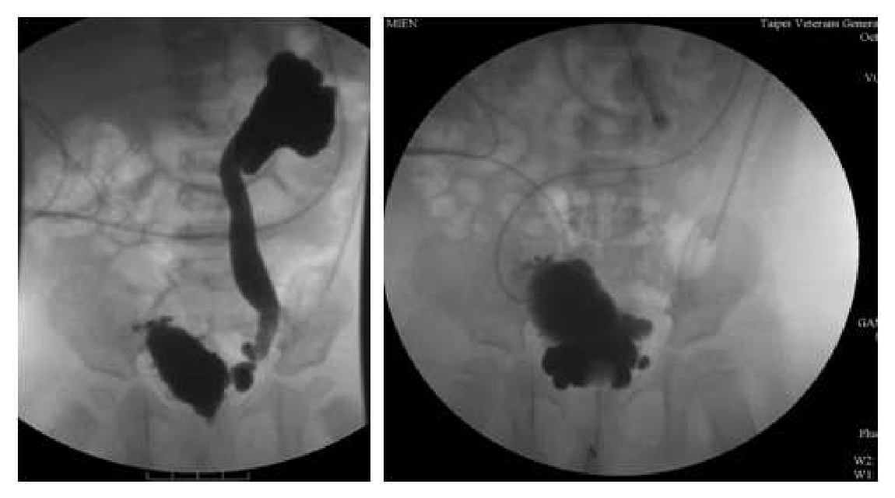
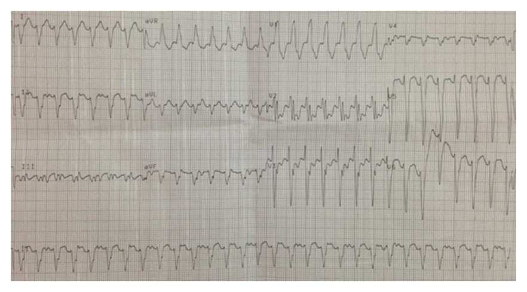
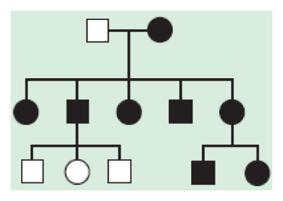
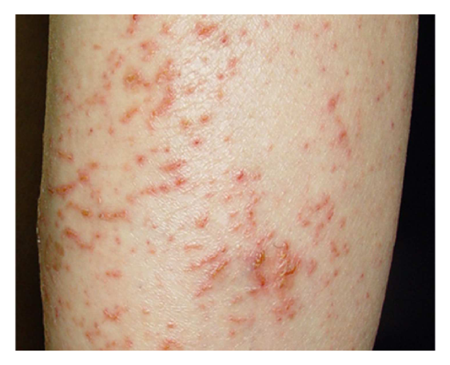
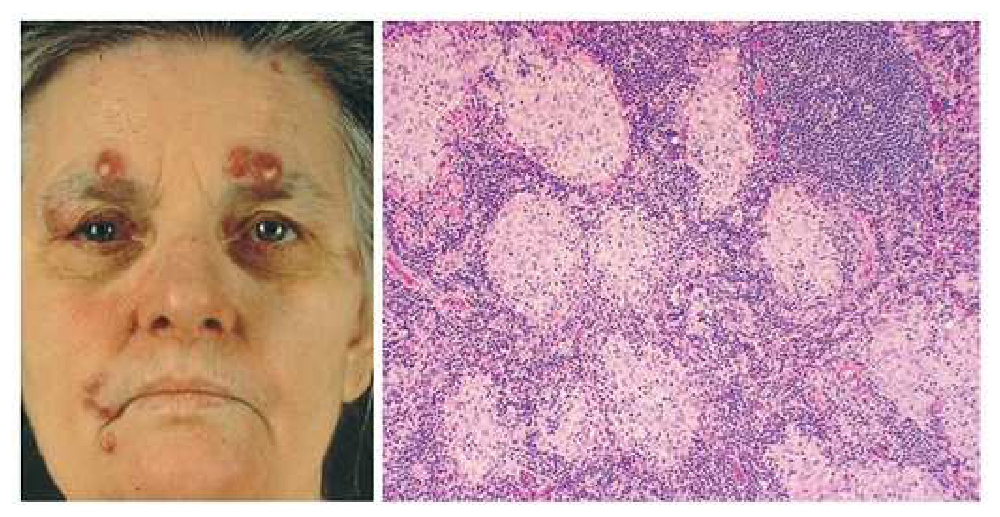
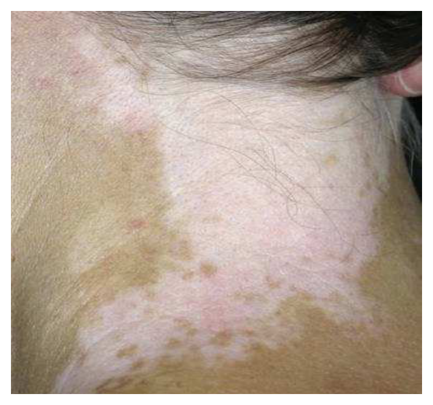
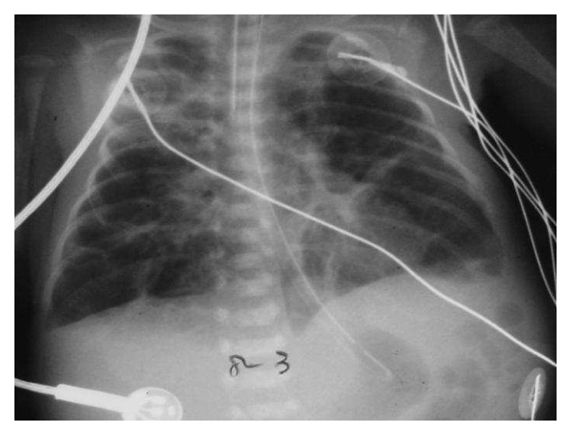
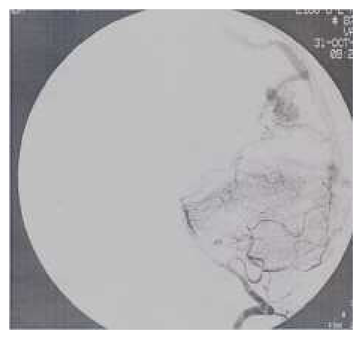
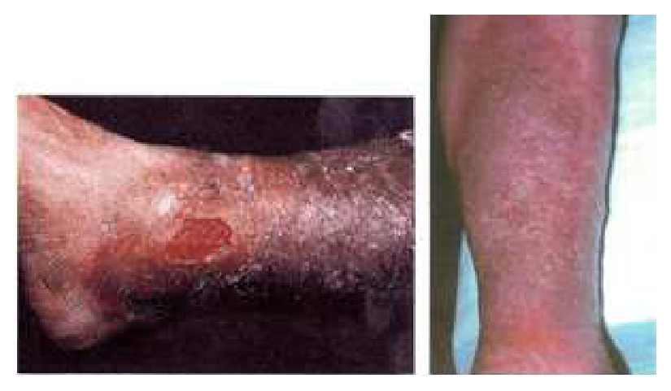

開卷有益 ／
醫師 ／ 醫學（四）（包括小兒科、皮膚科、神經科、精神科等科目及其相關臨床實例與醫學倫理） ／ 109 年第 1 次109 年第 1 次醫師醫學（四）（包括小兒科、皮膚科、神經科、精神科等科目及其相關臨床實例與醫學倫理）試題與答案
這一頁是民國 109 年第 1 次醫師醫學（四）（包括小兒科、皮膚科、神經科、精神科等科目及其相關臨床實例與醫學倫理）的整份歷屆試題，共 80 題，題目與標準答案出自考選部「國家考試試題及測驗式試題答案」開放資料，其中 80 題附有詳解。以下逐題列出題幹、選項與答案；要計時作答或記錄成績，請用線上練習。
考選部原始場次代碼：109020
線上作答這一科 →
全部 80 題
第 1 題
1歲女童高燒3天並有輕微咳嗽，懸壅垂與舌顎交界處（Uvulopalatoglossal junction）有紅色小斑或出血點（Nagayama spots），第4天開始出現紅疹後不再發燒，同時出現輕微腹瀉，此女童最可能是被下列何種病原體感染？
（A） 麻疹病毒（Measles）（B） 呼吸道融合病毒（Respiratory syncytial virus）（C） 人類疱疹病毒第六型（Human Herpesviruses 6）（D） 輪狀病毒（Rotavirus）答案：（C）
詳解與考點 正解：幼兒高燒約3天後，出疹即退燒，並有 Nagayama spots；這是嬰兒玫瑰疹（roseola infantum）的典型時序，最常由人類疱疹病毒第六型（human herpesvirus 6, HHV-6）引起，故選 C。
A：麻疹常見咳嗽、鼻炎、結膜炎與口腔 Koplik spots，皮疹通常在發燒期間或高燒後出現，不是本題「出疹後不再發燒」的典型型態。
B：呼吸道融合病毒主要造成細支氣管炎，常見喘鳴、呼吸窘迫與餵食困難；其臨床重點不是高燒退後突然出疹。
D：輪狀病毒以嘔吐與水樣腹瀉為主，輕微腹瀉可伴隨其他病毒感染，但無法解釋先高燒、後退燒出疹及 Nagayama spots 的組合。
本題考點：嬰兒玫瑰疹（roseola infantum/exanthem subitum）——常由 HHV-6 引起，典型為嬰幼兒先高燒數日、退燒後出疹；Nagayama spots 是軟顎與懸壅垂附近的紅斑或丘疹。
第 2 題
下列有關傳染性單核球增多症（Infectious mononucleosis）Epstein-Barr virus感染的敘述，何者最為正確？
（A） 3歲以下的患者常有典型的疲倦、咽喉炎及淋巴結腫大（B） 90%以上患者會有抽筋或步態不穩等神經學症狀，因此治療要以類固醇為主（C） 若使用Ampicillin 常會引起皮疹（D） 主要感染的淋巴球是T淋巴球答案：（C）
詳解與考點 正解：Epstein-Barr virus 感染與 ampicillin 的關聯。感染性單核球增多症病人若使用 ampicillin 或 amoxicillin，常出現廣泛斑丘疹；這不必然代表立即型青黴素過敏，卻是臨床重要誘答與用藥辨識點，故選 C。
A：幼兒感染 EBV 常無症狀或表現不典型；典型疲倦、咽喉炎與淋巴結腫大較常見於青少年與年輕成人，故不能說3歲以下「常有」典型三聯徵。
B：神經學併發症如腦炎或步態不穩並非90%以上病人會出現，類固醇也不是常規主要治療；只有特定嚴重併發症才可能考慮。
D：EBV 主要感染 B 淋巴球（B lymphocyte），周邊血中增多的非典型淋巴球多為對感染 B 細胞產生反應的 T 淋巴球；把主要被感染細胞誤寫成 T 細胞，是常見混淆。
本題考點：感染性單核球增多症（infectious mononucleosis）——EBV 主要感染 B lymphocyte，典型表現為發燒、咽喉炎、淋巴結腫大；aminopenicillin 相關皮疹是重要臨床線索。
第 3 題
3歲女童發燒2天、喉嚨痛、流口水、胃口不佳，口腔前部無異常、後咽壁有潰瘍，且合併有手掌腳掌皮疹。最可能的診斷是：
（A） 疱疹性齒齦口腔炎（Herpetic gingivostomatitis）（B） 手足口症（Hand-foot-and-mouth disease）（C） 德國麻疹（Rubella）（D） 水痘（Chickenpox）答案：（B）
詳解與考點 正解：後咽壁潰瘍合併手掌、腳掌皮疹。此組合最符合腸病毒常見的手足口症（hand-foot-and-mouth disease），故選 B。口腔病灶偏後方與手足末端皮疹的搭配，可用來和前口腔為主的疱疹性齒齦口腔炎區分。
A：疱疹性齒齦口腔炎常有牙齦明顯紅腫、疼痛與口腔前部廣泛水泡或潰瘍；本題口腔前部無異常，且有典型掌蹠皮疹，較不支持此診斷。
C：德國麻疹的皮疹多從臉部開始向軀幹擴散，可有耳後或枕部淋巴結腫大，但不以後咽壁潰瘍與掌蹠皮疹為特徵。
D：水痘通常是不同階段並存的全身性水泡疹，主要分布於軀幹與頭皮；單以手掌腳掌皮疹加後咽潰瘍並不典型。
本題考點：手足口症（hand-foot-and-mouth disease）——多由 enterovirus 引起，特徵是口腔潰瘍與手掌、足底的疹子；疱疹性齒齦口腔炎（herpetic gingivostomatitis）則較常累及前口腔與牙齦。
第 4 題
對於肺炎黴漿菌（Mycoplasma pneumoniae）感染的描述，下列何者錯誤？
（A） 是學齡兒童社區性肺炎的常見病原（B） 肺外病徵包括腦炎、關節炎和皮疹（C） 潛伏期2～3週，家庭內傳染性高（D） 正確診斷主要靠痰液和血液培養答案：（D）
詳解與考點 正解：肺炎黴漿菌缺乏細胞壁且培養困難，常規臨床診斷不以痰液和血液培養為主。可依臨床表現結合核酸檢測或血清學等方式判斷，因此錯誤的是 D。
A：肺炎黴漿菌是學齡兒童與青少年社區性肺炎的常見非典型病原，敘述正確，故不是本題要找的錯誤選項。
B：除呼吸道症狀外，肺炎黴漿菌可伴隨皮疹、關節炎與中樞神經併發症等肺外表現，敘述正確。
C：其潛伏期可達數週，密切接觸的家庭或群聚環境可出現傳播；緩慢起病與群聚傳播均符合此病原的流行病學特性。
本題考點：肺炎黴漿菌（Mycoplasma pneumoniae）——是學齡兒童非典型肺炎的重要病原，可有肺外併發症；因無細胞壁且培養不實用，診斷多仰賴核酸檢測（nucleic acid amplification test）或血清學。
第 5 題
下列何種疫苗為口服劑型？
（A） A型肝炎疫苗（Hepatitis A vaccine）（B） 輪狀病毒疫苗（Rotavirus vaccine）（C） 卡介苗（BCG vaccine）（D） 水痘疫苗（Varicella vaccine）答案：（B）
詳解與考點 正解：詢問疫苗的給藥途徑。輪狀病毒疫苗（rotavirus vaccine）為口服活性減毒疫苗，經腸道誘發保護力，故選 B。
A：A型肝炎疫苗通常以肌肉注射給予，並非口服劑型。
C：卡介苗（BCG vaccine）以皮內注射方式接種，接種處會形成局部反應，並非口服。
D：水痘疫苗以皮下或肌肉注射接種，不是口服疫苗。
本題考點：疫苗給藥途徑（vaccine administration route）——輪狀病毒疫苗是常見口服疫苗；A型肝炎、BCG 與水痘疫苗皆以注射方式接種。
第 6 題
有關哮吼（Croup）的描述，下列何者最正確？
（A） 哮吼是以細菌感染為主（B） 通常會有喘息聲（Wheezing）（C） 其臨床呼吸道症狀為聲門下方或聲帶處的軟組織水腫所致（D） 哭鬧可協助患者維持充足的換氣動作，所以不必刻意安撫答案：（C）
詳解與考點 正解：哮吼的聲音與上呼吸道狹窄機轉。哮吼多由病毒引起，喉部與聲門下區域軟組織水腫造成吸氣性喘鳴、犬吠樣咳嗽與聲音沙啞，故以 C 最正確。
A：哮吼以病毒感染為主，常見病原包括副流感病毒；把它概括為細菌感染為主不正確。
B：哮吼的典型異常呼吸音是吸氣性喘鳴（stridor），源自上呼吸道狹窄；喘息聲（wheezing）多指下呼吸道小氣道狹窄，兩者容易因都被描述為「喘」而混淆。
D：哭鬧會增加氧耗並使動態上呼吸道阻塞惡化，應讓兒童安靜、由照顧者安撫，不能認為哭鬧有助換氣而不必安撫。
本題考點：哮吼（croup）——多為病毒性喉氣管炎（laryngotracheitis），聲門下水腫導致犬吠樣咳嗽、沙啞與吸氣性 stridor；減少哭鬧有助避免呼吸窘迫惡化。
第 7 題
21天大的新生兒發高燒，被醫師懷疑為細菌性腦膜炎，下列那一個症狀最不常見？
（A） 黃疸（B） 躁動哭鬧（C） 頸部僵硬（D） 活動力不佳答案：（C）
詳解與考點 正解：21天大的新生兒。新生兒細菌性腦膜炎的表現往往非特異性，常見活動力不佳、躁動哭鬧、餵食差、體溫不穩或黃疸；典型的頸部僵硬在這個年齡較不明顯，因此最不常見的是 C。
A：黃疸可見於新生兒感染或敗血症，雖非所有個案都有，但在此年齡層是可出現的非特異性警訊。
B：躁動、難安撫的哭鬧可反映新生兒感染或中樞神經不適，是常見但不特異的表現。
D：活動力不佳、嗜睡與餵食減少是新生兒嚴重感染的重要警訊；它看似不如頸僵「典型」，但在新生兒反而更實用。
本題考點：新生兒細菌性腦膜炎（neonatal bacterial meningitis）——症狀常非特異，須留意嗜睡、活動力下降、易怒、餵食差與體溫異常；成人常見的 meningeal signs 如頸部僵硬，在新生兒敏感度較低。
第 8 題
一位妊娠週數40週、出生體重3,500公克的新生兒，其出生之後的體重變化，下列何者最不正常？
（A） 滿24小時體重為3,400公克（B） 滿48小時體重是3,400公克（C） 滿3天體重是3,100公克（D） 滿5天體重是3,200公克答案：（C）
詳解與考點 正解：足月兒出生體重3,500 g。生理性體重下降通常不超過出生體重的10%；3天時體重3,100 g，下降量為3,500 − 3,100 = 400 g，下降比例為400 ÷ 3,500 × 100% = 11.4%，已超過10%，最不正常，故選 C。
A：24小時體重3,400 g，下降100 g；100 ÷ 3,500 × 100% = 2.9%，屬早期可見的生理性下降範圍。
B：48小時體重3,400 g，同樣較出生體重下降2.9%，且未見進一步明顯下降，並不異常。
D：5天體重3,200 g，下降300 g；300 ÷ 3,500 × 100% = 8.6%，仍在一般可接受的生理性體重下降範圍內。
本題考點：新生兒生理性體重下降（physiologic weight loss）——出生後數日因體液調整與攝取尚未穩定可下降，但一般不應超過出生體重的10%；超過時須評估餵食不足、脫水或疾病。
第 9 題
一個新生兒出生後第5分鐘時呈現心跳每分鐘75次、呼吸緩慢不規則、全身發紺（Cyanosis）、上肢體有些微彎曲但下肢體軟趴、對抽痰刺激僅有皺眉反應。根據你的評估Apgar score是幾分？
（A） 2（B） 4（C） 6（D） 8答案：（B）
詳解與考點 正解：依 Apgar score 的五項各給0、1、2分。心跳75次／分給1分；呼吸緩慢不規則給1分；全身發紺給0分；上肢些微彎曲、下肢鬆軟代表肌肉張力給1分；抽痰僅皺眉為刺激反應給1分。總分為1 + 1 + 0 + 1 + 1 = 4分，故選 B。
A：2分低估了心跳、呼吸、肌肉張力與反射刺激各仍保有的1分表現；只有全身發紺是0分。
C：6分會高估至少兩個項目。全身發紺不能給1或2分，且緩慢不規則呼吸、些微彎曲與僅皺眉均未達2分標準。
D：8分更不符。8分通常代表多數項目接近良好，而本例有全身發紺、心跳低於100次／分與呼吸不規則。
本題考點：Apgar score——於出生後評估心跳（pulse）、呼吸（respiration）、肌肉張力（activity）、刺激反應（grimace）與膚色（appearance）；每項0–2分，總分用於描述新生兒當下適應狀態。
第 10 題
新生兒出生後即發現肌肉張力不佳無哭聲，經保溫、擦乾、清除口鼻分泌物與重新擺位後，心跳仍每分鐘40次且無自發性呼吸。接下來何種處置最為恰當？
（A） 給與自由流量氧氣（B） 以甦醒球做正壓換氣（C） 開始胸外按壓心臟（D） 先評估Apgar score再決定下一步動作答案：（B）
詳解與考點 正解：初步保溫、清理與擺位後，仍無自發呼吸且心跳僅40次／分。新生兒復甦最重要的初始介入是有效正壓換氣（positive-pressure ventilation, PPV），可改善缺氧並常使心跳回升，因此下一步選 B。
A：自由流量氧氣只能提供氧氣，無法在無呼吸的嬰兒建立肺部換氣；本例需要的是正壓通氣，而非單純給氧。
C：胸外按壓適用於已接受有效正壓換氣後心跳仍極低的情況。本例剛完成初步處置，應先立即建立有效通氣；這是新生兒復甦中最強的誘答順序陷阱。
D：Apgar score 可用於記錄出生後狀態，卻不能延誤復甦；臨床處置應依呼吸與心跳即時進行。
本題考點：新生兒復甦（neonatal resuscitation）——初步處置後若呼吸暫停、喘息或心跳偏低，優先給予 PPV；胸外按壓須建立在有效通氣後心跳仍持續極低的情境。
第 11 題
下列何種疾病或原因所導致的黃疸，以直接型高膽紅素血症（Conjugated hyperbilirubinemia）為主？
（A） ABO血型不合溶血（ABO incompatibility hemolysis ）（B） 溶血性尿毒症（Hemolytic-uremic syndrome）（C） Alagille症候群（Alagille syndrome）（D） Gilbert症候群（Gilbert syndrome）答案：（C）
詳解與考點 正解：直接型高膽紅素血症，代表膽汁鬱積（cholestasis）或膽道排泄障礙。Alagille症候群可有肝內膽管減少與膽汁鬱積，因而以 conjugated hyperbilirubinemia 為主，故選 C。
A：ABO血型不合造成溶血，血紅素分解增加所致主要是非結合型膽紅素（unconjugated bilirubin）上升，不是直接型為主。
B：溶血性尿毒症的核心為微血管溶血、血小板低下與腎損傷；若出現黃疸，溶血相關的非結合型膽紅素較符合其機轉。
D：Gilbert症候群是肝臟膽紅素結合能力下降，典型為輕度間接型高膽紅素血症，而非膽汁鬱積造成的直接型上升。
本題考點：結合型高膽紅素血症（conjugated hyperbilirubinemia）——提示膽汁鬱積或膽道疾病；Alagille syndrome 屬重要肝內膽汁鬱積原因。溶血與 Gilbert syndrome 則多造成 unconjugated hyperbilirubinemia。
第 12 題
下列何種腹瀉（Diarrhea）的機制是屬於Secretory type diarrhea？
（A） 先天性氯化物性腹瀉（Congenital chloride diarrhea）（B） 乳糖耐受不良腹瀉（Lactase deficiency）（C） 腸躁症（Irritable bowel syndrome）（D） 乳糜瀉（Celiac disease）答案：（A）
詳解與考點 正解：secretory type diarrhea，機轉為腸道主動分泌電解質或離子運輸異常，水分隨之進入腸腔。先天性氯化物性腹瀉因腸道氯離子運輸缺陷導致大量含氯糞便與持續性水樣腹瀉，屬分泌型腹瀉，故選 A。
B：乳糖酶缺乏使未消化乳糖留在腸腔產生滲透壓負荷，水分被拉入腸腔，屬滲透型腹瀉（osmotic diarrhea）。
C：腸躁症是腸腦互動與腸道蠕動、內臟敏感性異常所致的功能性腸胃疾病，並非典型的離子分泌性腹瀉。
D：乳糜瀉因麩質誘發小腸黏膜損傷與吸收不良，腹瀉主要與吸收不良及滲透負荷相關，不屬典型 secretory diarrhea。
本題考點：分泌型腹瀉（secretory diarrhea）——由腸道離子分泌增加或轉運異常造成，禁食後仍可持續；滲透型腹瀉（osmotic diarrhea）則常因未吸收溶質如乳糖累積。
第 13 題
下列何種疾病較不會導致Hydrops of the gallbladder？
（A） 川崎氏症（Kawasaki disease）（B） 鏈球菌咽喉炎（Streptococcal pharyngitis）（C） 過敏性紫斑症（Henoch-Schönlein purpura）（D） 囊狀纖維化（Cystic fibrosis）答案：（D）
詳解與考點 正解：膽囊積水（hydrops of the gallbladder）常與急性發炎、全身性血管炎或膽囊管阻塞相關。川崎氏症、鏈球菌咽喉炎與過敏性紫斑症均可在發炎或血管炎脈絡下出現膽囊積水；囊狀纖維化的典型膽道問題並非此題所指的急性膽囊積水關聯，因此選 D。
A：川崎氏症是全身性血管炎，腹部表現可包括膽囊積水；它看似是以發燒與黏膜皮膚症狀為主的疾病，但腹部超音波異常是已知表現。
B：鏈球菌咽喉炎可伴隨全身發炎反應，兒童急性非結石性膽囊積水可在此類感染後發生，故不是較不會導致者。
C：過敏性紫斑症是小血管炎，除皮疹、關節與腸胃症狀外，亦可有膽囊壁水腫或膽囊積水等腹部併發症。
本題考點：膽囊積水（hydrops of the gallbladder）與急性非結石性膽囊病變（acute acalculous gallbladder disease）——兒童可與全身發炎、感染或血管炎相關；Kawasaki disease 與 Henoch-Schönlein purpura 是重要聯想。
第 14 題
下列有關如何培養嬰幼兒及兒童良好飲食習慣的敘述，何者最為適當？
（A） 2歲半到3歲之間為黃金訓練期（B） 3歲後可以開始規定一些簡單的餐桌禮儀（C） 2至4歲可以使用脫脂鮮奶（D） 少喝含糖飲料，補充水分以稀釋果汁為宜答案：（B）
詳解與考點 正解：培養兒童長期良好飲食習慣，應配合發展階段建立可理解且可持續的生活規範。3歲後可開始教導簡單餐桌禮儀與用餐規則，符合幼兒逐步發展的自主性與理解能力，故選 B。
A：良好飲食習慣的建立不應只限定在2歲半到3歲的單一「黃金訓練期」；從嬰幼兒期開始，照顧者示範與規律供餐皆重要。
C：2至4歲兒童仍需要足夠脂肪以支持生長與神經發展，例行使用脫脂鮮奶未必適當，應依個別生長、飲食與健康風險評估。
D：減少含糖飲料的方向正確，但以稀釋果汁作為補水方式仍會攝入游離糖；較合適的主要飲品是白開水，而非把果汁稀釋後常規飲用。
本題考點：兒童飲食行為（child feeding practices）——照顧者提供規律、健康的食物與用餐環境，兒童在發展適當範圍內學習餐桌規範；水是日常補水首選，應減少含糖飲料與果汁。
第 15 題
在兒童便秘的病史或身體評估時發現紅旗（Red-flags）徵象時，應積極診斷有無器質性病變。下列現象何者不屬於紅旗徵象？
（A） 出生後48小時未排出胎便（Delayed meconium passage）（B） 糞便有潛血反應（Occult blood in stool）（C） 生長遲緩（Failure to thrive）（D） 直腸檢查有糞便（Stool in rectum）答案：（D）
詳解與考點 正解：要找出「不屬於」兒童便秘器質性病變的紅旗徵象。直腸檢查摸到糞便常見於功能性便秘的糞便滯留，本身不能指向特定器質性疾病，因此選 D。
A：出生後48小時未排出胎便是 Hirschsprung disease 等腸道神經或解剖異常的重要警訊，屬紅旗徵象。
B：糞便潛血可能反映發炎、過敏、裂傷以外的腸道病變或其他需鑑別的狀況；合併便秘時應審慎評估，屬警訊。
C：生長遲緩表示可能有慢性疾病、吸收不良、內分泌或其他器質性問題，不能直接當作單純功能性便秘處理。
本題考點：兒童便秘紅旗徵象（red flags in pediatric constipation）——延遲排胎便、出血、體重或生長異常、嚴重腹脹與神經學異常須評估器質性病因；功能性便秘常可見直腸糞便滯留。
第 16 題
10歲女童突發四肢無力至急診。血壓100/60 mmHg，血液檢查：肌酸酐（Creatinine）0.6 mg/dL，鉀離子為2.2mmol/L，鈉離子為138 mmol/L，氯離子為96 mmol/L，鎂離子為1.3 mg/dL（正常值為1.6～2.4 mg/dL），血中pH值為7.56，重碳酸根離子（HCO3-）為30 mmol/L。尿鈣與尿肌酸酐比值（Urine Ca/Cr）為0.1，女童最可能的診斷為：
（A） 第一型腎小管酸血症（Renal tubular acidosis, type I）（B） 吉特曼症候群（Gitelman syndrome）（C） Bartter氏症候群（Bartter syndrome）（D） Fanconi症候群（Fanconi syndrome）答案：（B）
詳解與考點 正解：低血鉀、低血鎂、代謝性鹼中毒及尿鈣偏低的組合。pH 7.56 為鹼血症，HCO3− 30 mmol/L 升高支持代謝性鹼中毒；鉀2.2 mmol/L與鎂1.3 mg/dL均低，尿 Ca/Cr 0.1顯示低尿鈣。此型態最符合吉特曼症候群（Gitelman syndrome），故選 B。
A：第一型腎小管酸血症通常造成代謝性酸中毒，而非本例的鹼血症與HCO3−上升，酸鹼方向即不符。
C：Bartter症候群也會有低血鉀代謝性鹼中毒，因而是最強誘答；但較常見高尿鈣，低血鎂也較符合 Gitelman syndrome，本例尿鈣偏低支持 B。
D：Fanconi症候群為近端小管多項溶質流失，常見代謝性酸中毒、糖尿或磷酸鹽流失等近端小管功能障礙表現，非此低尿鈣低血鎂鹼中毒組合。
本題考點：吉特曼症候群（Gitelman syndrome）——遠曲小管鹽分再吸收異常造成低血鉀性代謝性鹼中毒、低血鎂與低尿鈣；Bartter syndrome 亦有低血鉀性鹼中毒，但較常見高尿鈣。
第 17 題
6個月大男嬰因泌尿道感染合併敗血症，之後安排VCUG（Voiding cystourethrogram）檢查結果如附圖。下列敘述何者錯誤？

（A） 要進一步做鎝-99m-DMSA腎皮質掃描（B） 要考慮是因膀胱異常導致的次發性（Secondary）膀胱輸尿管逆流（C） 要立即接受手術矯正治療（D） 要排除病人是否有合併Sacral agenesis, occult spinal dysraphism答案：（C）
詳解與考點 正解：附圖 VCUG 可見顯影劑自膀胱逆流至輸尿管及腎盂腎盞，且輸尿管明顯擴張、迂曲，屬嚴重膀胱輸尿管逆流（vesicoureteral reflux, VUR）的影像表現；膀胱外觀亦須考量高壓或排尿功能異常所致的次發性逆流。嬰兒即使為高級別 VUR，也應先釐清膀胱功能、感染控制與腎臟受損情形，再依追蹤結果決定治療，並非發現逆流後就要立即手術矯正，故錯誤的是 C。
A：鎝-99m-DMSA 腎皮質掃描可評估急性腎盂腎炎後的腎皮質缺損、腎瘢痕與分腎功能；本例曾有泌尿道感染合併敗血症，且影像顯示嚴重逆流，安排檢查以評估腎實質傷害是合理作法。
B：圖中嚴重逆流合併輸尿管擴張，不能只當作原發性 VUR；膀胱出口阻塞、神經性膀胱或其他使膀胱壓力升高的異常，都可能造成次發性膀胱輸尿管逆流，應進一步考慮。
D：骶骨發育不全（sacral agenesis）與隱性脊柱裂（occult spinal dysraphism）可造成神經性膀胱（neurogenic bladder），進而形成高壓膀胱與次發性 VUR；因此在此影像型態下應排除相關脊髓與神經學異常。
本題考點：膀胱輸尿管逆流（vesicoureteral reflux, VUR）的 VCUG 判讀；次發性 VUR 與高壓膀胱／神經性膀胱（neurogenic bladder）的鑑別；鎝-99m-DMSA 腎皮質掃描用於評估腎皮質受損與腎瘢痕。
第 18 題
關於熱性痙攣之發生原因及處置，下列何項敘述較不適當？
（A） 常與嬰兒玫瑰疹（人類疱疹病毒第六型感染）有關（B） 若病患精神活力不佳，須排除中樞神經感染（C） 腦波檢查為單純熱性痙攣之常規檢查（D） 若意識持續未恢復，須檢驗血糖以鑑別低血糖之昏迷答案：（C）
詳解與考點 正解：「單純熱性痙攣」的常規評估。單純熱性痙攣若病史與神經學檢查沒有警訊，腦波檢查（electroencephalography, EEG）不屬常規檢查，因其結果通常不改變急性處置或預後判斷，故較不適當的是 C。
A：嬰兒玫瑰疹常由人類疱疹病毒第六型引起，高燒期是嬰幼兒熱性痙攣的常見背景，敘述適當。
B：熱性痙攣後若精神活力持續不佳、意識未恢復或出現其他異常，須考慮腦膜炎、腦炎等中樞神經感染，而不能逕自視為單純熱性痙攣。
D：意識持續未恢復時，低血糖是必須迅速排除的可逆性昏迷原因，檢驗血糖屬合理急診評估。
本題考點：單純熱性痙攣（simple febrile seizure）——典型個案的 EEG 與常規神經影像通常無必要；但持續意識改變、神經學異常或感染徵象須評估中樞神經感染與代謝性病因。
第 19 題
生長激素注射用於促進身高的效果，於下列何種疾病有最多的實證醫學證據支持，且同時符合美國FDA及臺灣健保給付標準？
（A） 透納氏症（Turner syndrome）（B） CATCH 22症候群（CATCH 22 syndrome）（C） 性聯遺傳低血磷佝僂症（X-linked hypophosphatemic rickets）（D） 中樞性性早熟（Central precocious puberty）答案：（A）
詳解與考點 正解：「促進身高」且同時要求有充分實證、符合 FDA 與臺灣健保給付；透納氏症（Turner syndrome）是生長激素治療的標準適應症之一。此病常有身材矮小，使用生長激素可改善成人身高預後，故選 A。
B：CATCH 22 症候群的主要問題是 22q11.2 缺失相關的心臟、免疫與發育異常，並非以生長激素促進身高為有充分證據支持的常規適應症。
C：性聯遺傳低血磷佝僂症的核心是腎臟磷酸鹽流失與骨礦化障礙，治療重點在矯正磷代謝及針對病理機轉處置；矮小雖可存在，但不能因此將生長激素視為其標準促高治療。
D：中樞性性早熟確會因骨齡加速而影響最終身高，看似與「長高」相關；但主要治療是抑制性腺軸的促性腺激素釋放素類似物，而非以生長激素作為標準治療。
本題考點：生長激素治療（growth hormone therapy）用於特定矮小症；透納氏症（Turner syndrome）是重要適應症；中樞性性早熟（central precocious puberty）應以抑制過早性腺軸活化為治療主軸。
第 20 題
兒童佝僂症（Rickets）常因體內鈣磷代謝異常所導致，下列那一項致病機轉所造成的佝僂症與其他最不相同？
（A） 慢性腎臟病（Chronic kidney disease）（B） 低血磷佝僂症（Hypophosphatemic rickets）（C） 腸胃吸收障礙（Malabsorption）（D） 營養不良致維生素D缺乏（Nutritional vitamin D deficiency）答案：（B）
詳解與考點 正解：找出致病機轉與其餘三者不同的佝僂症。低血磷佝僂症（hypophosphatemic rickets）主要由腎小管磷酸鹽流失造成低血磷與骨礦化不良，屬磷酸鹽耗損的問題；其餘選項主要共同涉及維生素 D 活化、供應或吸收不足，故選 B。
A：慢性腎臟病使腎臟活化維生素 D 的能力下降，並造成礦物質與骨代謝失衡，可導致腎性骨病；此方向與維生素 D 代謝障礙相關。
C：腸胃吸收障礙會減少脂溶性維生素 D 及鈣等營養素吸收，因而妨礙骨骼礦化，屬供應或吸收不足所致。
D：營養不良造成維生素 D 缺乏，是最典型的營養性佝僂症機轉；它與（C）同樣可使有效維生素 D 不足，並非本題要找的不同者。
本題考點：佝僂症（rickets）是生長板骨礦化不足；維生素 D 缺乏或代謝障礙（vitamin D deficiency or impaired metabolism）與低血磷佝僂症（hypophosphatemic rickets）的腎性磷酸鹽流失機轉不同。
第 21 題
下列有關川崎氏症（Kawasaki disease）的臨床表現敘述，何者最為正確？
（A） 即使未治療，通常會高燒3天後退燒（B） 淋巴腺腫大多為雙側且小於0.5mm（C） 眼睛紅，多為單側且有膿樣分泌物（D） 手、腳的脫皮多在症狀開始後2～3星期出現答案：（D）
詳解與考點 正解：川崎氏症的急性黏膜皮膚發炎消退後，手指與腳趾周圍常在發病後第 2～3 週出現脫皮，這是具代表性的亞急性期表現，故選 D。
A：未治療的川崎氏症發燒通常持續至少 5 天，且可更久；「高燒 3 天後退燒」不符合其典型病程。
B：川崎氏症的頸部淋巴結腫大多為單側，且臨床判準是明顯的頸部淋巴結腫大；本選項的雙側與極小數值皆不符。
C：眼部表現是雙側、非化膿性結膜充血，不應有膿樣分泌物；化膿性分泌物反而應考慮細菌性結膜炎等其他診斷。
本題考點：川崎氏症（Kawasaki disease）的診斷表現包括持續發燒、非化膿性雙側結膜充血、口腔黏膜變化、四肢末端變化、皮疹與頸部淋巴結腫大；亞急性期（subacute phase）常見指趾端脫皮。
第 22 題
診斷4歲孩童氣喘，下列何者為最主要的診斷方式？
（A） 病史詢問（B） 抽血檢查Total IgE（C） 肺功能測試（D） 皮膚過敏測試答案：（A）
詳解與考點 正解：4 歲幼兒未必能完成可重複、品質足夠的肺功能檢查，因此診斷氣喘最主要仍是病史詢問，整合反覆喘鳴、咳嗽、呼吸困難的變異性、誘發因子及對支氣管擴張治療的反應，故選 A。
B：Total IgE 升高可支持過敏體質，但正常值不能排除氣喘、升高也不能單獨診斷氣喘，特異性不足。
C：肺功能測試在能良好配合的較大兒童可提供可變性氣流受限的客觀證據，看似很直接；但對 4 歲孩童的可行性與診斷可靠度有限，不能取代病史的核心地位。
D：皮膚過敏測試可協助找出致敏原並規劃環境控制，檢查的是過敏致敏狀態，不是氣喘本身的主要診斷方式。
本題考點：幼兒氣喘（preschool asthma）以臨床病史與症狀型態診斷為主；變異性呼吸症狀（variable respiratory symptoms）及治療反應是重要線索；過敏檢驗（allergy testing）用於評估共病與誘因。
第 23 題
10歲孩童參加喜宴，忽然覺得呼吸困難、眼睛四周及口唇血管水腫、同時全身癢及吞嚥困難，立即轉送至急診室，下列何者是最適合的立即性處置？
（A） 注射腎上腺素（Epinephrine）（B） 注射類固醇（C） 使用升壓劑，如Dopamine（D） 使用抗組織胺答案：（A）
詳解與考點 正解：突發呼吸困難、口唇與眼周血管性水腫、全身搔癢及吞嚥困難，符合累及呼吸道的過敏性反應（anaphylaxis）。最優先的立即處置是注射腎上腺素（epinephrine），可改善上呼吸道水腫、支氣管收縮與循環血管擴張，故選 A。
B：類固醇可作為輔助治療，但起效較慢，無法在急性呼吸道風險下取代腎上腺素。
C：升壓劑可在輸液與腎上腺素後仍有難治性休克時考慮；題幹當下的首要危險是全身性過敏反應，不能先以 dopamine 取代第一線處置。
D：抗組織胺對蕁麻疹與搔癢有幫助，看似可處理「全身癢」；但它不能可靠解除喉頭水腫或支氣管收縮，故不適合作為立即的關鍵治療。
本題考點：過敏性反應（anaphylaxis）可表現為皮膚黏膜症狀合併呼吸或循環受損；腎上腺素（epinephrine）是第一線急救藥物；抗組織胺與類固醇（antihistamines and corticosteroids）僅為輔助處置。
第 24 題
有關預防嬰幼兒過敏的觀念，下列敘述何者最不恰當？
（A） 孕婦飲食不需避免高過敏食物（例如海鮮、花生等）（B） 建議在4～6個月大可開始添加副食品（C） 母乳哺育對於預防氣喘的效果不確定（D） 按照國際指引建議嬰幼兒常規性使用益生菌來預防過敏答案：（D）
詳解與考點 正解：題目問最不恰當的預防過敏觀念。益生菌對過敏預防的效果受菌種、時機與族群影響，證據並不足以支持所有嬰幼兒常規使用；把它說成國際指引一律建議的常規預防措施過度延伸，故選 D。
A：一般不建議孕婦為預防子女過敏而常規避開海鮮、花生等食物；不必要的限制未證實能有效預防過敏，還可能影響營養。
B：在可發展準備度足夠時，4～6 個月開始添加副食品是合理的建議，不宜無故延後多種食物的引入。
C：母乳有多項嬰兒健康益處，但對「預防氣喘」的效果並非可一概而論的確定結論；此敘述保留其不確定性，較為恰當。
本題考點：過敏預防（allergy prevention）重視適齡副食品引入；孕期飲食限制（maternal dietary restriction）不作為常規預防策略；益生菌（probiotics）的預防效益具族群與菌株差異，不能概括為所有嬰兒的常規處置。
第 25 題
有關急性骨髓性白血病（AML）的描述，下列何者最正確？
（A） 整體而言，AML五年存活率比急性淋巴性白血病（ALL）佳（B） 為Down syndrome 1～3歲時，最常見之白血病（C） 發生率是急性淋巴性白血病（ALL）的3倍（D） 使用干擾素、Hydroxyurea及Ara-c的組合，治癒率與移植相同答案：（B）
詳解與考點 正解：Down syndrome 的嬰幼兒具有急性巨核母細胞白血病（acute megakaryoblastic leukemia, AMKL）風險增加的特徵，尤其在 1～3 歲是重要的急性骨髓性白血病表現，因此（B）最正確，故選 B。
A：整體而言，兒童急性淋巴性白血病（ALL）的治療成果通常優於 AML；不能說 AML 的 5 年存活率較佳。
C：兒童急性白血病以 ALL 較常見，AML 的發生率並非 ALL 的 3 倍，方向相反。
D：干擾素、hydroxyurea 與 Ara-C 並非 AML 的標準治癒性組合；AML 的風險分層與是否移植須依疾病特徵及治療反應決定，不能宣稱此組合治癒率與移植相同。
本題考點：急性骨髓性白血病（acute myeloid leukemia, AML）在兒童少於急性淋巴性白血病；唐氏症（Down syndrome）與急性巨核母細胞白血病（acute megakaryoblastic leukemia）有特殊關聯；白血病治療採風險分層（risk stratification）。
第 26 題
6歲大的兒童因為突然暈倒被送到醫院，心電圖顯示如圖，心跳頻率約為200/min。病童的血壓經測量為50/25mmHg，可以摸到微弱的脈搏但週邊循環不佳，接下來應做的處置為何？

（A） 靜脈快速給與Adenosine治療（B） 使用冰袋輕輕壓迫前額（Valsalva maneuver）（C） 使用同步整流術（Synchronized DC cardioversion）治療（D） 靜脈給與Amiodarone治療答案：（C）
詳解與考點 正解：心電圖可見規則且非常快速的心搏，頻率約 200/min；更關鍵的是病童血壓僅 50/25 mmHg、脈搏微弱且週邊循環不良，已是有脈搏心搏過速合併低血壓與休克的血流動力學不穩定狀態。此時不能等待藥物或迷走神經刺激是否奏效，應立即施行（C）同步整流術（synchronized DC cardioversion），使電擊同步於 R 波，以終止造成灌流不全的快速心律，故選 C。
A：靜脈快速給予 adenosine 可用於規則型、窄 QRS 的陣發性上心室頻脈（paroxysmal supraventricular tachycardia, PSVT），也可在病童血流動力學穩定時作為診斷或治療嘗試；但本題已有嚴重低血壓與循環灌流不佳，應優先電氣治療，不能因給藥而延誤整流。
B：以冰袋刺激臉部可誘發潛水反射（diving reflex），屬迷走神經刺激法，對穩定的上心室頻脈可先嘗試；然而本題病童已休克，迷走神經刺激起效不確定且可能延誤恢復灌流，不適合作為當下主要處置。
D：amiodarone 是抗心律不整藥，可用於特定心律不整的藥物治療；但對有脈搏且血流動力學不穩定的快速心律，首要處置是同步整流術。藥物無法取代立即恢復有效心輸出量的電氣治療。
本題考點：兒童有脈搏心搏過速（pediatric tachycardia with a pulse）——是否血流動力學穩定比單看心率更優先；同步整流術（synchronized cardioversion）適用於快速心律合併低血壓、休克或灌流不良；迷走神經刺激與 adenosine 主要保留給穩定的規則型上心室頻脈。
第 27 題
下列何種心音比較不會出現在心房中膈缺損（Atrial septal defect, ASD）的病患？
（A） 寬且固定的第二心音分裂（Wide and fixed splitting of second heart sound）（B） 左側第二肋間出現噴射性收縮期的心雜音（Ejection systolic murmur）（C） 左下胸骨邊緣出現中期舒張期的心雜音（Mid-diastolic murmur）（D） 巨大且分裂的第一心音（Loud and splitting of first heart sound）答案：（D）
詳解與考點 正解：心房中膈缺損（ASD）的典型聽診重點是右心容量負荷增加所致的第二心音寬且固定分裂，以及肺動脈流量增加的收縮期噴射音；巨大且分裂的第一心音不是其典型表現，故選 D。
A：寬且固定的第二心音分裂是 ASD 的經典體徵。即使呼吸改變胸腔壓力，因左右心室每搏量差異持續存在，分裂仍較固定。
B：左側第二肋間的噴射性收縮期雜音來自經肺動脈瓣增加的血流，而非必然代表肺動脈瓣本身狹窄，這是 ASD 常見的誘答辨析。
C：左下胸骨邊緣的中期舒張期雜音可因大量左向右分流使三尖瓣流量增加而出現，屬較大的 ASD 可見表現。
本題考點：心房中膈缺損（atrial septal defect, ASD）造成左向右分流與右心容量負荷；固定性第二心音分裂（fixed split S2）是經典聽診線索；流量性雜音（flow murmur）反映跨瓣血流增加。
第 28 題
關於膜邊型的心室中膈缺損（Perimembranous type ventricular septal defect），下列敘述何者錯誤？
（A） 此類缺損在心室中膈缺損各種分型中最常見，即使在東方人亦是如此（B） 此類缺損不太可能會自行癒合，而且在各型的心室中膈缺損中，日後會造成主動脈瓣脫垂（Aortic cuspprolapse）的機率最高（C） 此類缺損不屬於感染性心內膜炎（Infective endocarditis）之高風險族群（D） 若因過多左向右分流而造成明顯的肺高壓，即使臨床症狀可用藥物控制，仍建議盡早接受手術修補本題送分，無標準答案
詳解與考點 本題官方公告送分。
第 29 題
活產嬰兒約1～2%有染色體異常。下列那一個臨床情境最不需要做染色體檢查？
（A） 周產期窒息導致腦性麻痺（Cerebral palsy, perinatal asphyxia induced）（B） 多重畸形（Ｍultiple congenital anomalies）（C） 心智障礙（Intellectual disability）（D） 生長畸變（Growth aberration）答案：（A）
詳解與考點 正解：「最不需要」做染色體檢查。若腦性麻痺已有周產期窒息這個明確的非遺傳性病因可解釋，其優先考量是缺氧缺血性腦傷，而非染色體異常，故選 A。
B：多重先天畸形常提示胚胎發育異常或染色體不平衡，屬應考慮染色體檢查的重要情境。
C：未明原因心智障礙可能與染色體數目或結構異常有關，因此遺傳評估與染色體檢查具有診斷價值。
D：生長畸變，無論是生長遲滯或異常過度生長，皆可能是染色體或遺傳症候群線索；看似只是身高體重問題，卻不宜排除遺傳檢查。
本題考點：染色體檢查（chromosomal testing）適用於多重畸形、未明原因發展遲緩或心智障礙及異常生長；病因明確的周產期窒息（perinatal asphyxia）所致腦性麻痺不以染色體異常為首要考量。
第 30 題
大多數先天性代謝異常疾病（Inborn errors of metabolism）的遺傳模式（Mode of inheritance）為Autosomalrecessive，下列何種代謝異常除外？
（A） Phenylketonuria（PKU）（B） Ornithine transcarbamylase deficiency（OTC deficiency）（C） Methylmalonic acidemia（MMA）（D） Maple syrup urine disease（MSUD）答案：（B）
詳解與考點 正解：題幹先指出多數先天性代謝異常為常染色體隱性遺傳，須找例外。鳥胺酸轉胺甲醯酶缺乏症（ornithine transcarbamylase deficiency）是尿素循環疾病，典型遺傳方式為 X 連鎖，故選 B。
A：苯丙酮尿症（phenylketonuria, PKU）通常為常染色體隱性遺傳，符合題幹所述的多數模式。
C：甲基丙二酸血症（methylmalonic acidemia, MMA）多屬常染色體隱性遺傳，故不是例外。
D：楓糖尿症（maple syrup urine disease, MSUD）由支鏈胺基酸代謝酵素缺陷引起，典型為常染色體隱性遺傳。
本題考點：先天代謝異常（inborn errors of metabolism）多為常染色體隱性遺傳（autosomal recessive inheritance）；鳥胺酸轉胺甲醯酶缺乏症（ornithine transcarbamylase deficiency）是重要的 X 連鎖（X-linked）例外。
第 31 題
下列家族譜系最有可能為何種遺傳模式？

（A） Mitochondrial inheritance（B） Autosomal recessive inheritance（C） X-linked recessive inheritance（D） Autosomal dominant inheritance答案：（A）
詳解與考點 正解：圖中第一代為未患病父親與患病母親；其子女不論男女皆患病。第二代患病男性與未患病女性所生子女皆未患病，反之患病女性與未患病男性所生的一子一女皆患病。此為母系傳遞：患病母親可將粒線體傳給所有子女，而患病父親不傳給子女，最符合粒線體遺傳（mitochondrial inheritance），故選 A。
B：體染色體隱性遺傳（autosomal recessive inheritance）常見未患病的帶因父母生出患病子女，且患病者與非帶因配偶所生子女通常皆為帶因但不發病；無法解釋圖中患病母親所生子女全數患病、患病父親則完全不傳遞的母系模式。
C：X 連鎖隱性遺傳（X-linked recessive inheritance）以男性患者較多見；患病女性通常須同時從患病父親及帶因或患病母親取得致病 X 染色體。圖中患病母親使男女子女皆患病，且患病女性將疾病傳給所有子女，並非典型 X 連鎖隱性傳遞。
D：體染色體顯性遺傳（autosomal dominant inheritance）可見男女皆患病與世代垂直傳遞，但患病父親通常也可傳給子女，且異型合子患病親本與未患病配偶的子女不會呈現固定的母系全傳遞。圖中父系不傳、母系傳遞的方向性較支持粒線體遺傳。
本題考點：粒線體遺傳（mitochondrial inheritance）由母親傳給子女，父親不傳遞；異質性（heteroplasmy）與閾值效應（threshold effect）可使實際家系中的表現度不一，但本圖呈現的是典型母系傳遞方向。
第 32 題
3歲男童因過度肥胖而就診，出生時的基本新生兒篩檢無異常，亦無新生兒低張力的過去病史。家族史無特殊肥胖體質。身體診察發現手腳皆有軸後多指（趾）症（post-axial polydactyly）、外生殖器短小發育不良、眼底呈現色素病變，此男童最有可能患有下列何種疾病？
（A） Bardet-Biedl syndrome（B） Noonan syndrome（C） Prader-Willi syndrome（D） Williams syndrome答案：（A）
詳解與考點 正解：過度肥胖合併軸後多指（趾）症、性腺發育不全與視網膜色素病變，是 Bardet-Biedl syndrome 的典型線索組合；其為纖毛病（ciliopathy），故選 A。
B：Noonan syndrome 常見特殊顏貌、短 stature、頸蹼與肺動脈瓣狹窄等，並不以多指症、視網膜色素病變及肥胖的組合表現。
C：Prader-Willi syndrome 也會有幼兒期肥胖與性腺發育不全，看似有迷惑性；但其早期常見新生兒低張力與餵食困難，且不以軸後多指症和視網膜色素病變為特徵。
D：Williams syndrome 的典型特徵是特殊臉容、心血管異常與認知行為表現，和本題的多指症及視網膜病變不符。
本題考點：Bardet-Biedl syndrome 是纖毛病（ciliopathy），典型表現為肥胖（obesity）、視網膜營養不良（retinal dystrophy）、軸後多指症（post-axial polydactyly）及性腺功能低下（hypogonadism）；Prader-Willi syndrome 的早期低張力可用於鑑別。
第 33 題
下列何種情形不符合立即通報兒少保護小組之條件？
（A） 有超過3次以上急診外傷就醫紀錄且檢查結果與受傷機制不符（B） 病史前後不一致且延遲就醫（C） 低處（小於150公分）跌落以致骨折（D） 2歲以上兒童之單一手部骨折答案：（D）
詳解與考點 正解：題目問不符合立即通報兒少保護小組條件者。2 歲以上兒童單一手部骨折可由常見意外造成，若無病史矛盾、延遲就醫或其他警訊，單憑此一發現不足以構成高度虐待疑慮，故選 D。
A：反覆外傷急診紀錄且檢查結果與所稱受傷機轉不符，是非意外性傷害的重要警訊，應立即啟動保護評估。
B：病史前後不一致及延遲就醫都可能反映照顧者隱匿傷害機轉，屬需要立即通報與跨專業評估的警訊。
C：低處跌落卻造成骨折，若傷勢嚴重程度與機轉不相稱，應懷疑非意外性傷害；「跌倒」看似常見，仍須以發展能力與受傷型態交叉判斷。
本題考點：兒少保護（child protection）須辨識非意外性傷害（non-accidental injury）的警訊；病史不一致、延遲就醫、反覆不明外傷與傷勢機轉不符都需立即通報；骨折評估須結合年齡、發展能力及完整臨床情境。
第 34 題
56歲男性，於冬季寒流來臨時，雙側小腿出現如圖所示會癢之皮膚病變。下列何種處置最不適當？

（A） 鼓勵患者多洗澡（B） 塗抹類固醇（C） 提高室內濕度（D） 使用潤膚劑答案：（A）
詳解與考點 正解：圖中雙側小腿可見散在紅色搔癢性丘疹、抓痕與濕疹樣變化；結合冬季寒流誘發，符合乾燥性濕疹（asteatotic eczema/xerotic eczema）。皮膚乾燥與角質層屏障受損會加重發炎及搔癢；頻繁洗澡，尤其使用熱水或清潔劑，會進一步移除皮膚表面脂質、增加水分散失，故最不適當的是 A。
B：局部塗抹類固醇（topical corticosteroid）可抑制濕疹的皮膚發炎，對紅疹與搔癢的急性期控制適當；應依病灶部位與嚴重度選擇合宜強度及使用時間。
C：提高室內濕度可減少低溫乾燥環境造成的角質層水分散失，有助改善冬季相關的皮膚乾燥與濕疹，屬適當處置。
D：潤膚劑（emollient）可補充角質層脂質、減少經表皮水分散失（transepidermal water loss），是乾燥性濕疹的基礎照護，屬適當處置。
本題考點：乾燥性濕疹（asteatotic eczema/xerotic eczema）常在冬季、乾燥環境與小腿等部位出現；皮膚屏障修復（skin barrier repair）以減少刺激性清潔、增加環境濕度及規律使用潤膚劑為主；局部類固醇（topical corticosteroid）用於控制發炎性濕疹病灶。
第 35 題
80歲老先生住在安養院，皮膚有一些丘疹，經皮膚科醫師診斷確定為疥瘡，下列敘述何者正確？
（A） 有一無疥瘡病史的朋友，在探望老先生後第二天開始覺得全身發癢，其得到疥瘡機會很高（B） 頭部是疥蟲好犯的部位（C） 當疥蟲離開人體後，數個小時內就死亡（D） 鏡檢下，若只看到蟲卵或排泄物而不見蟲體，也可以確定是疥瘡感染答案：（D）
詳解與考點 正解：疥瘡的確診可由皮膚刮屑鏡檢找到疥蟲、蟲卵或糞粒（scybala）；即使未直接看到蟲體，只要看到蟲卵或排泄物仍可證實感染，故選 D。
A：初次感染後的搔癢通常需要一段致敏時間才出現，探視隔天即全身發癢不符合典型初次感染的時間型態，因此不能據此說感染機會很高。
B：一般成人疥瘡好發於指縫、手腕、腋窩、腰部與生殖器等處，頭部通常不是主要侵犯部位；嬰幼兒或特殊宿主的分布才可能不同。
C：疥蟲離開人體後並非數個小時內立刻死亡，在適當環境仍可存活一段時間，因此衣物與寢具的處理有其意義。
本題考點：疥瘡（scabies）由疥蟲感染引起；皮膚刮屑鏡檢（skin scraping microscopy）發現蟲體、蟲卵或糞粒可確診；初次感染的搔癢（pruritus）有致敏潛伏期。
第 36 題
有關白色糠疹（pityriasis alba）的敘述，下列何者錯誤？
（A） 出現白色脫屑斑（B） 常見於臉上（C） 好發於小孩（D） 患者即使成年後，多數病變仍不易痊癒答案：（D）
詳解與考點 正解：題目問錯誤敘述。白色糠疹（pityriasis alba）是兒童常見的良性、可自行改善的輕度濕疹樣疾病，多數會隨時間緩解；宣稱成年後多數病變仍不易痊癒不正確，故選 D。
A：白色糠疹常呈現界線不十分清楚的淡白色斑，表面可有細微脫屑，此敘述正確。
B：病灶最常見於臉部，尤其是兒童臉頰等日曬可見部位，敘述正確。
C：白色糠疹好發於小孩與青少年，與皮膚乾燥或異位性體質可有關聯，敘述正確。
本題考點：白色糠疹（pityriasis alba）是常見兒童皮膚病，表現為臉部淡白脫屑斑；其屬良性且自限性（self-limited）病程；須與真菌感染造成的色素改變鑑別。
第 37 題
關於乾癬（psoriasis）的敘述，下列何者正確？
（A） 白種人罹患乾癬的比例比華人低（B） Köebner phenomenon只見於這個疾病（C） 部分患者會有家族史（D） 不會造成指甲及關節病變答案：（C）
詳解與考點 正解：乾癬具有遺傳易感性，部分患者可追問到家族史，這是正確敘述，故選 C。
A：乾癬在白種族群的盛行率一般高於華人，選項將比較方向顛倒。
B：Köbner 現象是皮膚受創後在創傷處出現原有皮膚病灶的現象，乾癬可見但非僅見於乾癬，其他皮膚病也可能出現。
D：乾癬可侵犯指甲，造成凹陷、甲床分離等變化，也可合併乾癬性關節炎；皮膚病灶看似局限於皮膚，卻不可忽略指甲與關節影響。
本題考點：乾癬（psoriasis）為免疫介導的慢性發炎性皮膚病；遺傳易感性（genetic susceptibility）可表現為家族史；Köbner 現象（Koebner phenomenon）、指甲乾癬（nail psoriasis）與乾癬性關節炎（psoriatic arthritis）是重要特徵。
第 38 題
關於異位性皮膚炎（atopic dermatitis）致病機轉的敘述，下列何者錯誤？
（A） FLG基因突變使filaggrin的製造減少（B） 可觀察到皮膚生理功能（包括經皮水分散失及含水量）異常（C） 病人的皮膚免疫系統缺陷，因此易合併細菌感染（D） 慢性期的病理機轉主要以 Th2細胞的活化為主要之角色，Th1細胞角色較少答案：（D）
詳解與考點 正解：「慢性期」的免疫機轉。異位性皮膚炎急性期較偏向 Th2 反應，但慢性期除 Th2 外，Th1 等細胞免疫反應也更具角色；將慢性期說成主要只由 Th2 活化、Th1 角色很少是過度簡化的錯誤敘述，故選 D。
A：FLG 基因突變可減少 filaggrin，削弱角質層屏障功能，是異位性皮膚炎的重要遺傳機轉。
B：患者可見經皮水分散失增加及角質層含水異常，反映皮膚屏障功能受損，敘述正確。
C：皮膚屏障受損與局部免疫失衡使細菌較易定殖與感染，尤其常與金黃色葡萄球菌相關，敘述方向正確。
本題考點：異位性皮膚炎（atopic dermatitis）的核心包括皮膚屏障缺陷（skin barrier dysfunction）與免疫失調（immune dysregulation）；filaggrin（FLG）缺陷增加經皮水分散失；急、慢性期的 T helper cell 反應並非完全相同。
第 39 題
關於Sturge-Weber syndrome之敘述，下列何者錯誤？
（A） 顏面三叉神經支配區皮膚有酒色斑（port-wine stain）（B） 酒色斑是惡性的血管瘤（C） 病患可能併發癲癇（D） 可能出現青光眼答案：（B）
詳解與考點 正解：題目問錯誤敘述。Sturge-Weber syndrome 的酒色斑是毛細血管畸形（capillary malformation），不是惡性血管瘤；把先天血管畸形說成惡性腫瘤錯誤，故選 B。
A：顏面酒色斑常位於三叉神經支配區，尤其累及眼支分布時，與本症的神經眼科併發症風險相關，敘述正確。
C：軟腦膜血管畸形可造成皮質刺激與腦部功能異常，患者可能出現癲癇，敘述正確。
D：若血管異常影響眼部結構，可能發生青光眼；因此有顏面酒色斑的患者須留意眼科評估，敘述正確。
本題考點：Sturge-Weber syndrome 屬神經皮膚症候群（neurocutaneous syndrome）；酒色斑（port-wine stain）是毛細血管畸形而非腫瘤；軟腦膜血管畸形（leptomeningeal vascular malformation）可伴隨癲癇與青光眼。
第 40 題
皮膚病灶的臨床及病理的發現如圖所示，胸部X片發現有雙側肺門淋巴結腫大，下列何者為最可能的皮膚疾病？

（A） 類肉芽腫 （sarcoidosis）（B） 結核病 （tuberculosis）（C） 皮膚T細胞淋巴癌 （cutaneous T cell lymphoma）（D） 卡波希氏肉瘤 （Kaposi's sarcoma）答案：（A）
詳解與考點 正解：圖中臉部可見多發紅褐色丘疹與結節性斑塊；病理切片可見界限清楚、細胞密集而缺乏明顯乾酪性壞死的肉芽腫。合併胸部X片雙側肺門淋巴結腫大，是類肉芽腫（sarcoidosis）的典型系統性線索，故選 A。
B：結核病（tuberculosis）也可形成肉芽腫，因而容易混淆；但結核性肉芽腫較常見乾酪性壞死，且胸部影像通常不是以對稱性雙側肺門淋巴結腫大作為典型表現，與本題的皮膚及病理組合不符。
C：皮膚T細胞淋巴癌（cutaneous T cell lymphoma）常以慢性脫屑性斑疹、斑塊或腫瘤表現，病理重點是非典型T淋巴球浸潤及表皮親和性（epidermotropism），不是圖中所示的肉芽腫性發炎；也無法典型解釋雙側肺門淋巴結腫大。
D：卡波希氏肉瘤（Kaposi's sarcoma）常見紫紅色至紫褐色斑疹、斑塊或結節，病理可見梭形細胞增生、裂隙樣血管腔與紅血球外滲；本圖的病理呈肉芽腫形態，並非血管性腫瘤。
本題考點：類肉芽腫（sarcoidosis）為多系統肉芽腫性疾病，病理典型為非乾酪性肉芽腫（noncaseating granuloma）；雙側肺門淋巴結腫大（bilateral hilar lymphadenopathy）是重要胸部影像線索；皮膚類肉芽腫可呈丘疹、結節或斑塊，須與感染性肉芽腫及血管性腫瘤區分。
第 41 題
下列何種自體抗體為Sjögren's syndrome 特異性標示抗體？
（A） 抗SSB/La抗體（B） 抗U1-RNP抗體（C） 抗Jo-1抗體（D） 抗Scl-70抗體答案：（A）
詳解與考點 正解：Sjögren's syndrome 的重要自體抗體為抗 Ro/SSA 與抗 La/SSB；在選項中，抗 SSB/La 抗體最符合此病的特異性標示抗體，故選 A。
B：抗 U1-RNP 抗體較典型地與混合性結締組織病（mixed connective tissue disease）相關，不是 Sjögren's syndrome 的代表性標記。
C：抗 Jo-1 抗體是抗合成酶抗體，主要與發炎性肌病及相關間質性肺病有關，並非本題所問疾病。
D：抗 Scl-70 抗體與全身性硬化症（systemic sclerosis）相關，尤其是瀰漫型皮膚硬化的臨床脈絡，非 Sjögren's syndrome 的標示抗體。
本題考點：Sjögren's syndrome 是自體免疫性外分泌腺疾病；抗 Ro/SSA 與抗 La/SSB（anti-Ro/SSA and anti-La/SSB）為重要血清學標記；自體抗體（autoantibodies）有助鑑別不同結締組織疾病。
第 42 題
下列何者為慢性紅斑性狼瘡（chronic cutaneous lupus erythematosus）的特徵？
（A） 最常見的臨床表現狼瘡性脂肪炎（lupus panniculitis）（B） 凍瘡型紅斑性狼瘡（chilblain lupus erythematosus）好發於冬季低溫季節，常發生在軀幹部位（C） 典型的圓盤型紅斑性狼瘡（classic discoid lupus erythematosus）病人大約只有5%最後會演變成全身型紅斑性狼瘡（systemic lupus erythematosus）（D） 肥厚型紅斑性狼瘡（hypertrophic discoid lupus erythematosus）是因為真皮有黏液素（mucin）沉積，才造成肥厚外觀答案：（C）
詳解與考點 正解：慢性皮膚型紅斑性狼瘡中，典型圓盤型紅斑性狼瘡（classic discoid lupus erythematosus）以慢性、局限性皮膚病灶為主，僅少數患者進展為全身型紅斑性狼瘡；選項所述約 5% 的低進展比例符合此疾病特性，故選 C。
A：慢性皮膚型紅斑性狼瘡最常見的臨床型態是圓盤型紅斑性狼瘡，不是狼瘡性脂肪炎（lupus panniculitis）。
B：凍瘡型紅斑性狼瘡常在低溫季節加劇，但好發於手指、腳趾、耳朵等肢端暴露處，而非以軀幹為主。
D：肥厚型圓盤型紅斑性狼瘡的肥厚外觀主要反映顯著角化與表皮增生；真皮黏液素沉積較應聯想到其他狼瘡相關皮膚表現，不能作為本型肥厚的主要解釋。
本題考點：慢性皮膚型紅斑性狼瘡（chronic cutaneous lupus erythematosus）以圓盤型紅斑性狼瘡（discoid lupus erythematosus）最典型；局限性圓盤型病灶進展為全身型紅斑性狼瘡（systemic lupus erythematosus）的比例低；凍瘡型狼瘡（chilblain lupus）常受低溫誘發。
第 43 題
24歲女性在臉部、頸部出現脫色病灶，如圖所示，關於此病的敘述，下列何者錯誤？

（A） 此病症可能出現Koebner phenomenon（B） 此病症可能造成病人社會適應困難（C） 病灶內的黑色素細胞雖存在，但無法有效製造黑色素顆粒（D） 波長308 nm之準分子光治療（excimer phototherapy）有效答案：（C）
詳解與考點 正解：圖中頸部可見界線相對清楚的脫色斑，符合白斑症（vitiligo）。白斑症的主要病理機轉是表皮黑色素細胞（melanocyte）遭破壞或缺失，因而無法產生黑色素；不是黑色素細胞仍存在、但單純無法有效製造黑色素顆粒。因此（C）敘述錯誤，故選 C。
A：白斑症可出現 Koebner phenomenon，即搔抓、摩擦、外傷等皮膚受損處誘發新的白斑病灶，故此敘述正確，並非答案。
B：白斑常發生於臉部、頸部與四肢等外露部位，影響外觀與身體意象，可能造成羞恥、焦慮、人際互動及社會適應困難，故此敘述正確。
D：308 nm 準分子光治療（excimer phototherapy）可用於局部白斑症，藉由紫外線光療促進復色，對部分患者有效，故此敘述正確。
本題考點：白斑症（vitiligo）為黑色素細胞（melanocyte）減少或缺失所致的後天性脫色；Koebner phenomenon 指皮膚受傷後於受損處出現新病灶；局部治療可使用 308 nm 準分子光（excimer phototherapy）。
第 44 題
下列何者非治療重症肌無力症之正確方式?
（A） 抗膽鹼脂藥物（anticholinesterase drugs）（B） 類固醇藥物（corticosteroid）（C） 胸腺切除術（thymectomy）（D） 病人感染時使用aminoglycoside藥物答案：（D）
詳解與考點 正解：重症肌無力症合併感染時的用藥安全。aminoglycoside 會干擾神經肌肉接合處的傳遞，可加重無力甚至誘發呼吸肌無力，因此（D）不是正確治療方式，故選 D。
A：抗膽鹼脂酶藥（anticholinesterase drugs）可減少乙醯膽鹼分解、增進神經肌肉接合處傳遞，是症狀治療的基本藥物。
B：類固醇（corticosteroid）可抑制自體免疫反應，適用於需要免疫治療的重症肌無力症病人。
C：胸腺切除術（thymectomy）對特定病人，尤其胸腺瘤或部分全身型重症肌無力症，可作為治療策略；它看似侵入性高，卻不是錯在治療原理。
本題考點：重症肌無力症（myasthenia gravis）的神經肌肉接合處傳遞障礙；aminoglycoside-induced neuromuscular blockade 可惡化無力；免疫治療（immunotherapy）與胸腺切除術（thymectomy）。
第 45 題
48歲男性罹患高血壓多年，沒有規則服藥。在工作中，突然感覺右臂、右腿及右臉麻木（numbness），但沒有明顯的無力（weakness），最可能的病灶位置（lesion site）在何處？
（A） 右側丘腦（right thalamus）（B） 左側丘腦（left thalamus）（C） 右側中央溝前側腦迴（right precentral gyrus）（D） 左側中央溝前側腦迴（left precentral gyrus）答案：（B）
詳解與考點 正解：突發右臉、右手、右腳的純感覺缺損，沒有明顯無力。丘腦是對側身體感覺訊息的重要中繼站；右側症狀代表病灶在左側丘腦，故選 B。
A：右側丘腦病灶主要造成左側感覺障礙，與本題右側症狀的交叉神經路徑不符。
C：右側中央溝前腦迴（precentral gyrus）是初級運動皮質，病灶預期造成左側無力而非右側純感覺症狀。
D：左側中央溝前腦迴雖可造成右側症狀而看似合理，但其主要表現是右側運動無力；本題刻意提示「沒有明顯無力」，較支持左側丘腦。
本題考點：純感覺型腦中風（pure sensory stroke）；丘腦（thalamus）的對側感覺中繼功能；中央前迴（precentral gyrus）主司對側隨意運動。
第 46 題
磁振造影（MRI）在臨床運用中，對於接近大腦皮質（cortical）或是腦室（ventricle）旁的腦部梗塞，下列何種序列（sequences）可提供最高敏感度將病灶突顯出來？
（A） T1-weighted imaging（B） T2-weighted imaging（C） fluid-attenuated inversion recovery（FLAIR）imaging（D） susceptibility-weighted imaging（SWI）答案：（C）
詳解與考點 正解：靠近皮質或腦室旁的腦梗塞。FLAIR（fluid-attenuated inversion recovery）會抑制腦脊髓液的高訊號，使腦室旁及皮質下的水腫或梗塞高訊號不被腦脊髓液掩蓋，最利於突顯此類病灶，故選 C。
A：T1-weighted imaging 對解剖構造及慢性變化有用，但急性缺血病灶通常不如 FLAIR 顯眼。
B：T2-weighted imaging 可見含水量增加的病灶，但腦室旁明亮腦脊髓液可能降低病灶與周邊的對比。
D：SWI（susceptibility-weighted imaging）對出血、含鐵血黃素及靜脈性磁敏感效應特別敏感，並非本題要找的缺血性白質病灶最佳序列。
本題考點：FLAIR imaging 的腦脊髓液抑制；腦室旁病灶（periventricular lesion）之 MRI 對比；缺血與出血影像序列的區分。
第 47 題
因腦中風造成閉鎖症候群（locked-in syndrome），下列何者為最常見的原因？
（A） 內頸動脈阻塞（internal carotid artery occlusion）（B） 基底動脈阻塞（basilar artery occlusion）（C） 小血管梗塞（small-vessel infarction）（D） 心房顫動造成心因性血栓（cardiac emboli）答案：（B）
詳解與考點 正解：閉鎖症候群的核心是腹側橋腦受損，造成四肢癱瘓與構音不能，但意識及垂直眼動常保留。供應橋腦腹側的基底動脈阻塞最典型，故選 B。
A：內頸動脈阻塞主要影響前循環，較常造成大腦半球症候群，不能典型地解釋橋腦腹側雙側病變。
C：小血管梗塞可造成局灶性腔隙症候群，但通常範圍不足以形成典型閉鎖症候群。
D：心房顫動可形成心因性栓塞，是腦中風的機轉之一；然而題目問最常見的直接血管原因，應是（B）基底動脈阻塞，而非栓塞來源。
本題考點：閉鎖症候群（locked-in syndrome）；腹側橋腦（ventral pons）病灶；基底動脈阻塞（basilar artery occlusion）。
第 48 題
有關顳葉癲癇（temporal lobe epilepsy）的敘述，下列何者錯誤？
（A） 是成人最常見的癲癇症候群（epilepsy syndrome）（B） 癲癇發生區（epileptogenic region）通常和外側顳葉結構（lateral temporal lobe structures）有關（C） 對藥物反應不佳的病人可接受顳葉切除術，大約一半的病人可以在一年後達到癲癇不發作（seizure free）的療效（D） 海馬回硬化（hippocampus sclerosis）是顳葉癲癇主要病因之一答案：（B）
詳解與考點 正解：本題問錯誤敘述。顳葉癲癇常見的致癲癇病灶在內側顳葉，尤其海馬迴與相關邊緣系統結構；把典型病灶說成「通常」與外側顳葉有關不正確，故選 B。
A：顳葉癲癇是成人常見的局部癲癇症候群，敘述正確，故不是答案。
C：藥物難治性顳葉癲癇可評估癲癇手術；術後有相當比例病人能達成無發作，方向正確，故非本題錯項。
D：海馬迴硬化（hippocampal sclerosis）是內側顳葉癲癇的重要病理基礎之一，敘述正確。
本題考點：內側顳葉癲癇（mesial temporal lobe epilepsy）；海馬迴硬化（hippocampal sclerosis）；癲癇手術（epilepsy surgery）。
第 49 題
下列對於癲癇診斷分類何者正確？
（A） 失神性發作（absence seizures）常常會有先兆（aura），並且時間常常超過5分鐘以上（B） 肌攣性發作（myoclonic seizures）以快速而短暫的肌肉收縮與躍動為主要表現（C） 肌攣性發作（myoclonic seizures）主要影響四肢（limbs），並不會影響軀幹（trunk）（D） 失張力性發作（atonic seizures）往往在強直–陣攣性發作（tonic-clonic seizure）後發生答案：（B）
詳解與考點 正解：肌攣性發作的發作型態。肌攣性發作（myoclonic seizure）為突然、短暫、類電擊般的肌肉收縮，可累及單一肌群或多個部位，故（B）正確。
A：失神性發作通常突然開始與結束、持續很短，典型情況沒有先兆；「常超過 5 分鐘」不符合其典型表現。
C：肌攣性發作不只影響四肢，也可累及軀幹或其他肌群；把分布限定於四肢是錯誤的絕對化敘述。
D：失張力性發作是突然失去肌張力而跌倒或點頭，不是強直－陣攣發作後才會出現的固定現象；它看似都與跌倒有關，實際發作機轉不同。
本題考點：肌攣性發作（myoclonic seizure）的短暫肌肉收縮；失神性發作（absence seizure）；失張力性發作（atonic seizure）。
第 50 題
36歲男性，主訴近2年每年冬天都有持續2個月，在後眼窩劇烈疼痛，固定每晚發作，且時間約15分鐘到3小時不等，每次痛起來都會有單側流淚和眼睛紅的情形。此病人最可能的診斷是：
（A） 偏頭痛（migraine）（B） 叢發性頭痛（cluster headache）（C） 緊張性頭痛（tension-type headache）（D） 三叉神經痛（trigeminal neuralgia）答案：（B）
詳解與考點 正解：冬季成群發作、固定夜間、單側眼眶後劇痛持續 15 分鐘至 3 小時，並伴同側流淚與結膜充血，是叢發性頭痛的典型時間型態及自主神經症狀，故選 B。
A：偏頭痛常持續更久，且較常伴噁心、畏光或畏聲；雖也可單側疼痛，但不符合規律夜間短時反覆發作。
C：緊張型頭痛多為雙側壓迫或緊箍感，不會典型伴單側流淚、眼紅等顱自主神經症狀。
D：三叉神經痛多是數秒至數分鐘的電擊樣臉痛，常由觸碰或咀嚼誘發；眼眶後痛與自主神經症狀雖使它看似接近，發作長度及群集週期不符。
本題考點：叢發性頭痛（cluster headache）；三叉自律神經頭痛（trigeminal autonomic cephalalgia）；顱自主神經症狀（cranial autonomic symptoms）。
第 51 題
關於亨丁頓舞蹈症（Huntington disease）之敘述，下列何者錯誤？
（A） 可能在動作症狀出現前15年，便能看到尾核（caudate nucleus）萎縮（B） 隨著病程的進行，舞蹈症（chorea）的嚴重程度會逐漸加重（C） 認知功能的退化，主要在執行功能（executive function）（D） 年輕發病的病人可能以巴金森症候群（parkinsonism）表現答案：（B）
詳解與考點 正解：本題問錯誤敘述。亨丁頓舞蹈症的舞蹈症可隨病程波動，晚期常因動作遲緩、僵硬與失能而不再單純加重；將其說成嚴重度必定逐漸加重過度簡化，故選 B。
A：在動作症狀明顯前，尾核（caudate nucleus）萎縮可已出現，符合疾病的神經退化進程，故非錯項。
C：亨丁頓舞蹈症的認知障礙常突出於執行功能（executive function），如規劃、彈性轉換與抑制控制，敘述正確。
D：年輕發病型可表現僵硬與動作遲緩等巴金森症候群（parkinsonism），而不一定以典型舞蹈症為主，敘述正確。
本題考點：亨丁頓舞蹈症（Huntington disease）；尾核萎縮（caudate atrophy）；年輕發病型（juvenile-onset disease）的僵硬型表現。
第 52 題
一位52歲男性因為重複問一樣的問題被送來急診，該病人過去有偏頭痛之病史，最近並無外傷病史。身體檢查發現此患者仍有警覺性及對人的定向感，注意力、遠程記憶（remote memory）及語言功能都還正常，常規之實驗室檢查結果都正常。該患者7小時後，症狀自然緩解。最可能的診斷是：
（A） 短暫性全面腦失憶（transient global amnesia）（B） 基底偏頭痛（basilar migraine）（C） 失智症（dementia）（D） 癲癇發作後意識混亂（postictal confusion）答案：（A）
詳解與考點 正解：反覆問同一問題代表突發的前向性失憶，但警覺性、個人定向感、注意力、遠程記憶及語言均保留，且 7 小時內自行緩解，最符合短暫性全面腦失憶（transient global amnesia, TGA），故選 A。
B：基底型偏頭痛可有腦幹先兆症狀，但本題沒有眩暈、複視、構音障礙等腦幹症狀，孤立性短暫前向性失憶較支持 TGA。
C：失智症是持續且漸進的認知退化，不會在數小時內完全恢復，故不符。
D：癲癇後混亂常伴意識混亂、注意力不佳或可辨識的發作線索；本題清醒且認知功能多保留，故不像 postictal confusion。
本題考點：短暫性全面腦失憶（transient global amnesia）；前向性失憶（anterograde amnesia）；與癲癇後混亂（postictal confusion）的鑑別。
第 53 題
巴金森氏病人服用左多巴（levodopa）者，會比服用多巴胺促效劑（dopamine agonist）者容易出現下列何種副作用？
（A） 異動症（dyskinesia）（B） 肢體水腫（C） 幻覺（hallucination）（D） 衝動控制失調（impulse control disorder）答案：（A）
詳解與考點 正解：左多巴（levodopa）長期使用最具代表性的運動併發症是異動症（dyskinesia），常與藥效濃度波動及病程進展相關；相較於多巴胺促效劑，更容易出現此問題，故選 A。
B：肢體水腫較常見於多巴胺促效劑的副作用，並非 levodopa 相對更典型的不良反應。
C：幻覺可見於多種巴金森氏病藥物，包括 levodopa 與多巴胺促效劑，不能作為 levodopa 相較之下最具區別性的選項。
D：衝動控制失調與多巴胺促效劑的關聯特別強；它看似也是多巴胺治療副作用，但相對比較題中方向剛好相反。
本題考點：左多巴誘發異動症（levodopa-induced dyskinesia）；多巴胺促效劑（dopamine agonist）的周邊水腫與衝動控制失調；巴金森氏病（Parkinson disease）藥物併發症。
第 54 題
關於肌強直營養不良（myotonic dystrophy），下列敘述何者錯誤？
（A） 自體顯性遺傳（B） 以近端無力為主，常見複視（C） 經常合併多系統疾病，例如白內障、糖尿病、心律不整等（D） 血液中的肌肉酵素一般是正常或輕微上升答案：（B）
詳解與考點 正解：本題問錯誤敘述。肌強直性營養不良的肌無力典型以遠端肌群及臉部為主，並有肌強直；「以近端無力為主，常見複視」不是其典型表現，故選 B。
A：肌強直性營養不良通常為自體顯性遺傳（autosomal dominant inheritance），並可見遺傳早現現象，敘述正確。
C：白內障、糖代謝異常及心律不整等多系統表現是此病的重要特徵，敘述正確。
D：血清肌酸激酶等肌肉酵素可正常或僅輕度上升，與嚴重肌肉壞死性疾病不同，敘述正確。
本題考點：肌強直性營養不良（myotonic dystrophy）；遠端肌無力（distal weakness）與肌強直（myotonia）；多系統疾病（multisystem disease）。
第 55 題
下列有關馬尾症候群（cauda equina syndrome）的敘述，何者正確？
（A） 以上運動神經元（upper motor neuron）表徵為主（B） 通常臨床症狀是左右兩側對稱（C） 深部肌腱反射增強（D） 球海綿體肌反射（bulbocavernosus reflex）消失答案：（D）
詳解與考點 正解：馬尾由腰薦神經根構成，受壓時呈下運動神經元與薦神經根功能障礙。球海綿體肌反射（bulbocavernosus reflex）消失提示薦神經反射弧受損，符合馬尾症候群，故選 D。
A：以上運動神經元徵象如痙攣與病理反射較支持脊髓本體病變；馬尾神經根病變應以低張、萎縮等下運動神經元表現為主。
B：馬尾神經根受壓常呈不對稱放射痛、感覺或運動缺損，並非通常左右完全對稱。
C：深部肌腱反射在受影響神經根支配區通常減弱或消失，而非增強。
本題考點：馬尾症候群（cauda equina syndrome）；下運動神經元（lower motor neuron）徵象；球海綿體肌反射（bulbocavernosus reflex）。
第 56 題
下列分泌何種荷爾蒙的腦下垂體腺瘤（hormone-secreting pituitary adenoma），可以考慮服用多巴胺促效劑（dopamine agonist）治療？
（A） 促甲狀腺激素（thyroid-stimulating hormone, TSH）（B） 促腎上腺皮質激素（adrenocorticotropic hormone, ACTH）（C） 泌乳激素（prolactin）（D） 生長激素（growth hormone）答案：（C）
詳解與考點 正解：官方答案為 C。泌乳激素分泌腺瘤（prolactinoma）可利用多巴胺對泌乳激素的抑制作用；多巴胺促效劑能降低泌乳激素並縮小腫瘤，是最典型的藥物治療。惟題幹僅稱「可以考慮」，（D）在特定情境亦可能使用 cabergoline，單選的措辭有爭議
A：分泌 TSH 的腺瘤通常不以多巴胺促效劑作為標準主要治療，須依腫瘤與甲狀腺功能整體評估。
B：ACTH 分泌腺瘤造成庫欣病，其治療策略與 prolactinoma 不同，多巴胺促效劑並非典型首選。
D：生長激素分泌腺瘤的標準藥物策略以其他抑制生長激素的治療為主；但輕度或特定情境的肢端肥大症可考慮以 cabergoline 作單獨或輔助治療。因此（D）不是最典型答案，卻使本題的「可以考慮」不夠嚴謹。
本題考點：泌乳素瘤（prolactinoma）；多巴胺抑制泌乳激素（dopamine inhibition of prolactin）；功能性腦下垂體腺瘤（functioning pituitary adenoma）。
第 57 題
42歲男性，沒有糖尿病及慢性器官衰竭病史；15天前曾有2天腹瀉，緊接著雙腳腳底有麻刺感，逐漸轉為麻木，沿著腳底一路麻到膝蓋，也發現兩側小腿的肌肉鬆垮及力量減弱，雙手使用筷子及扭瓶蓋的動作也變困難。下列有關病患的診斷臆測，何者最為正確？
（A） 右側中大腦動脈的大面積中風（B） 遺傳性運動及感覺神經病變（C） 陳舊性的脊髓白質病變後遺症（D） 急性的周邊神經病變答案：（D）
詳解與考點 正解：腹瀉後約 2 週出現由遠端向上進展的對稱性感覺異常與無力，且累及上下肢，提示急性免疫性多發神經根神經病變，即急性周邊神經病變，故選 D。
A：右側中大腦動脈大面積中風會造成左側急性局灶性神經缺損，無法解釋雙側對稱、由腳向上的周邊神經病程。
B：遺傳性運動及感覺神經病變多為慢性進展，不會典型在感染後數日急速惡化。
C：陳舊脊髓白質病變後遺症應是既存且相對固定的缺損，與本題感染後新發、進行性的病程不符。
本題考點：格林－巴利症候群（Guillain-Barré syndrome）；急性發炎性多發神經根神經病變（acute inflammatory polyradiculoneuropathy）；感染後免疫反應（postinfectious immune response）。
第 58 題
承上題，若在急診處，下列何種項目是最不需要的檢查？
（A） 腰椎穿刺（lumbar puncture）（B） 神經傳導及肌電圖檢查（C） 緊急安排骨頭掃描（bone scan）（D） 監測血氧濃度及肺活量（vital capacity）答案：（C）
詳解與考點 正解：承上題的腹瀉後進行性對稱四肢無力最像格林－巴利症候群。急診重點是確認周邊神經病變並及早偵測呼吸衰竭；骨頭掃描不會協助診斷或處置此急性神經肌肉問題，最不需要，故選 C。
A：腰椎穿刺可檢查腦脊髓液蛋白與細胞數變化，對格林－巴利症候群的支持性診斷有幫助。
B：神經傳導與肌電圖可確認脫髓鞘或軸索性周邊神經病變，並協助分類，屬相關檢查。
D：監測血氧濃度及肺活量（vital capacity）用於評估呼吸肌受累與呼吸衰竭風險，雖病人初始可未喘，卻是急診中不能漏掉的安全監測。
本題考點：格林－巴利症候群（Guillain-Barré syndrome）的急診評估；腦脊髓液檢查（cerebrospinal fluid examination）；呼吸肌無力（respiratory muscle weakness）監測。
第 59 題
下列何者是思覺失調症（schizophrenia）預後較佳之預測因子？
（A） 年輕發病（B） 有情感性疾患（mood disorders）家族史（C） 沒有促發因子（precipitating factor）（D） 有思覺失調症家族史答案：（B）
詳解與考點 正解：思覺失調症若有情感性疾患家族史，較可能呈現情感症狀相關特質，傳統上是較佳預後的預測因子之一，故選 B。
A：年輕發病通常與較差的功能預後相關，因病程對發展、學業與社會功能的干擾較早。
C：缺乏促發因子代表發作較不具可辨識的情境誘因，傳統預後因子中不屬較佳指標。
D：思覺失調症家族史表示遺傳易感性，傳統上與較佳預後無關；它看似也是「精神疾病家族史」，但與（B）情感性疾患家族史的預後意義不同。
本題考點：思覺失調症（schizophrenia）預後因子；情感性症狀（affective symptoms）；功能預後（functional outcome）。
第 60 題
關於不寧腿症候群（restless leg syndrome），下列何者錯誤？
（A） 可能於懷孕期間出現（B） 可能與缺鐵性貧血有關（C） 睡前飲酒有助於緩解不寧腿症候群之症狀（D） Ropinirole（Requip）是一種多巴胺致效劑（dopamine agonist），可用來治療此症答案：（C）
詳解與考點 正解：本題問錯誤敘述。不寧腿症候群的症狀常在休息與夜間加重；酒精會干擾睡眠且可能使症狀惡化，並非睡前緩解方法，故選 C。
A：懷孕期間可能出現或加重不寧腿症候群，敘述正確，故非答案。
B：缺鐵或缺鐵性貧血與不寧腿症候群相關，評估鐵狀態是重要臨床考量，敘述正確。
D：ropinirole 是多巴胺促效劑（dopamine agonist），可用於不寧腿症候群治療；它看似與睡眠症狀無關，實則作用於相關神經傳導機制。
本題考點：不寧腿症候群（restless legs syndrome）；缺鐵（iron deficiency）；多巴胺促效劑（dopamine agonist）。
第 61 題
思覺失調症（schizophrenia）的病人長期追蹤約有多少比率會自殺死亡？
（A） 1～3%（B） 10～13%（C） 25～30%（D） 40～50%答案：（B）
詳解與考點 正解：官方答案為 B，本題採傳統精神醫學教材的長期追蹤估計，將思覺失調症患者自殺死亡比例列為約 10～13%。惟較新的統合研究常估計終生自殺死亡風險約為 5%，現有選項沒有精確對應此當代估計；數值受世代、治療可近性與追蹤設計影響
A：1～3%低於題目所採的傳統長期追蹤估計，故非答案。
C：25～30%明顯高於題目所採估計；自殺意念或企圖的比例可高於自殺死亡比例，不能混為一談。
D：40～50%更高，並不符合題目所問的自殺死亡比例。
本題考點：思覺失調症（schizophrenia）的自殺風險（suicide risk）；自殺死亡（suicide death）與自殺企圖（suicide attempt）的區分；流行病學估計（epidemiologic estimate）的研究異質性。
第 62 題
關於譫妄（delirium），下列敘述何者錯誤？
（A） 抗精神病長效針劑是治療譫妄之首選藥物之一（B） 年齡大於70歲的患者為譫妄的高危險群（C） 譫妄是一個臨床整體預後不佳的指標（D） 譫妄的核心症狀包含了意識狀態的障礙及認知、知覺的改變答案：（A）
詳解與考點 正解：本題問錯誤敘述。譫妄處置的核心是找出並治療誘因、提供非藥物支持；若因嚴重躁動需短期藥物控制，也不會把抗精神病長效針劑當首選，故選 A。
B：高齡是譫妄的重要危險因子，年齡大於 70 歲者尤其常見脆弱性與多重誘因，敘述正確。
C：譫妄常反映急性疾病與生理失衡，整體上與住院結果及預後不佳相關，敘述正確。
D：意識或注意力障礙合併急性、波動性的認知與知覺改變是譫妄的核心臨床特徵，敘述正確。
本題考點：譫妄（delirium）的急性與波動病程；誘因處置（treatment of underlying cause）；非藥物照護（nonpharmacologic management）。
第 63 題
下列何者不是選擇性血清素再吸收抑制劑（SSRI）的副作用？
（A） 血糖急速上升（B） 噁心（C） 性功能障礙（D） 睡眠障礙答案：（A）
詳解與考點 正解：本題問不是 SSRI 的典型副作用。SSRI 常見腸胃不適、性功能障礙與睡眠改變；血糖急速上升不是其典型不良反應，故選 A。
B：噁心是 SSRI 常見的早期腸胃道副作用，與血清素作用於腸胃道有關，故非答案。
C：性功能障礙是 SSRI 的重要常見副作用，可表現為性慾下降、延遲射精或難以達高潮，故非答案。
D：睡眠障礙如失眠或嗜睡可隨不同 SSRI 與個人反應出現，敘述正確。
本題考點：選擇性血清素再吸收抑制劑（selective serotonin reuptake inhibitor, SSRI）；腸胃道副作用（gastrointestinal adverse effects）；性功能障礙（sexual dysfunction）。
第 64 題
有關身體形象畏懼症（body dysmorphic disorder）的敘述，下列何者錯誤？
（A） 以手術或醫學美容醫療介入可以有效地減緩病情（B） 患者對身體常見不滿意部位包含鼻子及頭髪（C） 常見的精神科共病包含重鬱症與強迫症（D） 藥物治療身體形象畏懼症以抗憂鬱劑治療為主答案：（A）
詳解與考點 正解：身體形象畏懼症患者對外觀缺陷的過度專注，核心治療須處理其扭曲信念與重複行為，而非修補外觀。手術或醫學美容即使暫時改變患者在意的部位，通常無法解除疾病本身，患者也可能將焦點轉移到其他部位；較合適的是精神治療與抗憂鬱藥物，故錯誤敘述為 A。
B：鼻子與頭髮確是患者常反覆擔心、覺得有缺陷的外觀部位，敘述正確，故不是本題答案。
C：重鬱症與強迫症常與身體形象畏懼症共病，且反覆照鏡、遮掩或比較外觀的行為也容易使人聯想到強迫症；此選項的共病描述正確。
D：選擇性血清素再吸收抑制劑等抗憂鬱藥可用於減少執著與相關憂鬱、焦慮症狀，藥物治療以抗憂鬱劑為主的方向正確。
本題考點：身體形象畏懼症（body dysmorphic disorder）是對微小或旁人察覺不到的外觀缺陷過度執著；治療以認知行為治療（cognitive behavioral therapy）及血清素相關抗憂鬱治療為主，美容介入通常不能有效治癒；常見共病包括重鬱症（major depressive disorder）與強迫症（obsessive-compulsive disorder）。
第 65 題
有關急性壓力疾患（acute stress disorder）及創傷後壓力症候群（posttraumatic stress disorder）之敘述，下列何者錯誤？
（A） 急性壓力疾患之症狀若超過一個月以上則需考慮診斷可能為創傷後壓力症候群（B） 創傷後壓力症候群治療合併藥物治療及心理治療是有助益的（C） 急性壓力疾患之症狀中不會出現解離症狀（D） 創傷後壓力症候群的病因包含hypothalamic-pituitary-adrenal（HPA）axis之功能失調答案：（C）
詳解與考點 正解：急性壓力疾患本來就可出現創傷後的解離表現。急性壓力疾患在創傷後短期內可有侵入症狀、負向情緒、解離、逃避與警覺性升高；解離可表現為麻木感、非現實感或記憶缺口。因此（C）稱不會出現解離症狀錯誤，故選 C。
A：創傷相關症狀持續超過 1 個月時，診斷上須考慮創傷後壓力症候群；急性壓力疾患的時間範圍較短，敘述正確。
B：創傷後壓力症候群可採創傷焦點心理治療，必要時合併藥物處理特定症狀或共病，合併治療對部分患者有助益，故非錯誤敘述。
D：下視丘－腦下垂體－腎上腺軸（hypothalamic-pituitary-adrenal, HPA axis）調節異常與創傷後壓力症候群的壓力反應機轉有關，敘述正確。
本題考點：急性壓力疾患（acute stress disorder）與創傷後壓力症候群（posttraumatic stress disorder）皆可在創傷後出現侵入、逃避與警覺性症狀；急性壓力疾患可有解離症狀（dissociative symptoms）；症狀持續時間是兩者重要的診斷區分。
第 66 題
一位35歲男性卡車司機，一向身體健康，這2年來因須開長途夜車而吸食安非他命，最近兩週產生明顯之聽幻覺及被害妄想、易躁動（agitation）且易怒而打傷同事，下列何者錯誤？
（A） 宜停止使用安非他命（B） 可短期使用抗精神病劑，如haloperidol（C） 若難以照顧時，可先肢體約束以降低傷人自傷風險，然須密切觀察（D） 若有憂鬱症狀，可給予情緒穩定劑，如carbamazepine答案：（D）
詳解與考點 正解：長期使用安非他命後新發聽幻覺、被害妄想與激躁，應先視為興奮劑相關精神病症狀並處理安全與停藥。首要作法是停止安非他命、降低自傷他傷風險，必要時短期使用抗精神病藥控制嚴重激躁或精神病症狀。carbamazepine 是情緒穩定劑，並非處理此類憂鬱症狀的標準選擇，故錯誤為 D。
A：停用安非他命是處置的根本，持續使用會延長或加重精神病與激躁症狀，敘述正確。
B：嚴重幻覺、妄想或激躁時可短期使用如 haloperidol 的抗精神病藥；它看似只是治療原發性精神病，但此處也可用於控制急性興奮劑相關精神病症狀，故正確。
C：若非藥物去激化及密切觀察不足以維護安全，可在最小必要範圍內短暫肢體約束並持續監測，敘述的安全原則正確。
本題考點：興奮劑誘發精神病症（stimulant-induced psychotic disorder）可出現幻覺、妄想與激躁；急性處置包括停用物質、去激化與安全維護，必要時短期抗精神病治療；情緒穩定劑（mood stabilizer）不是安非他命相關憂鬱症狀的常規首選。
第 67 題
虛談（confabulation）代表個案最可能有下列何種精神障礙？
（A） 思考（thought）障礙（B） 情緒（emotion）障礙（C） 記憶（memory）障礙（D） 語言（language）障礙答案：（C）
詳解與考點 正解：虛談並非故意說謊，而是在記憶空缺時無意識地以看似合理的內容補足。其病理核心是新近記憶形成或提取受損，患者對所說內容通常深信不疑，因此最可能代表記憶障礙，故選 C。
A：思考障礙著重思考形式、速度或內容的異常，例如思考鬆弛或妄想；虛談是補填遺忘資訊，主要不是思考歷程障礙。
B：情緒障礙的核心是情緒低落、躁動或情感表達異常，不能解釋患者以虛構敘事填補記憶缺口，故不符。
D：語言障礙會影響理解、命名、複誦或表達形式；虛談中的語句可相當流暢，問題在內容來源的記憶失真而非語言能力。
本題考點：虛談（confabulation）是無意識地以虛構或錯置內容填補記憶缺損；記憶障礙（memory disorder）常見於遺忘症候群（amnestic syndrome）與特定腦部病變；須與蓄意欺瞞及妄想（delusion）區分。
第 68 題
咖啡因（caffeine）的戒斷症狀，下列何者正確？
（A） 戒斷症狀常於咖啡停止一星期後發生（B） 最常見症狀包括頭痛、倦怠（C） 常見症狀包括幻聽、妄想（D） 戒斷症狀的嚴重度與咖啡因的使用量無關答案：（B）
詳解與考點 正解：咖啡因停止後的典型戒斷表現為頭痛與精神、身體疲乏。長期規律攝取者突然減量或停止後，常有頭痛、倦怠、嗜睡、注意力不佳或情緒易怒；（B）所列頭痛與倦怠最符合，故選 B。
A：咖啡因戒斷通常在停止或明顯減量後不久出現，不是典型地等到 1 週後才發生；把時間拉得太晚是此選項看似合理卻錯的原因。
C：幻聽與妄想不是咖啡因戒斷的常見核心症狀，出現此類精神病症狀時應評估其他物質、精神疾病或身體因素。
D：症狀嚴重度會受原先咖啡因攝取量、使用規律性及個人敏感度影響，不能說與使用量無關。
本題考點：咖啡因戒斷（caffeine withdrawal）常見頭痛、倦怠、嗜睡與注意力下降；戒斷症狀（withdrawal symptoms）通常在停用或減量後早期發生；精神病症狀並非其典型表現。
第 69 題
對於注意力缺損／過動症的診斷標準，下列何者錯誤？
（A） 至少有部分過動、衝動難控制、注意力不集中的症狀在7歲之前即已出現（B） 只要有部分症狀在一個情境中出現就算（C） 症狀必須造成明顯的社交、學業或工作功能的損害（D） 必須和廣泛性發展障礙（pervasive developmental disorder）、思覺失調症（schizophrenia）、其他精神病態、情緒疾患、焦慮症、解離症、人格疾患作區辨本題送分，無標準答案
詳解與考點 本題官方公告送分。
第 70 題
關於兒童青少年妥瑞氏症（Tourette's disorder），下列敘述何者正確？
（A） 只要出現動作抽動（motor tics）或聲帶型抽動（vocal tics）其中一種即可診斷為妥瑞氏症（B） 只要長大成年後都會痊癒（C） 同卵雙胞胎手足和異卵雙胞胎手足同時罹患妥瑞氏症的機會相同（D） 作用在多巴胺接受器拮抗作用的抗精神藥物對於妥瑞氏症具有療效答案：（D）
詳解與考點 正解：妥瑞氏症的抽動與多巴胺調節有關，嚴重或功能受損時可用多巴胺受體拮抗的抗精神病藥減少抽動頻率與強度。因此（D）正確，故選 D。
A：妥瑞氏症在病程中須曾有多發性動作抽動及至少一種聲語抽動，兩者不必同時出現；僅有其中一類則不足以診斷。此選項把診斷條件放得過寬，故錯。
B：許多患者隨年齡增長症狀會減輕，但不是所有人成年後都痊癒；「都會」是過度絕對化，故錯。
C：同卵雙胞胎的共同罹病率高於異卵雙胞胎，支持遺傳因素的影響，兩者機會並不相同。
本題考點：妥瑞氏症（Tourette's disorder）需有動作抽動（motor tics）及聲語抽動（vocal tics）；抽動症具有遺傳易感性；多巴胺受體拮抗劑（dopamine receptor antagonists）可用於症狀嚴重的抽動治療。
第 71 題
下列那種藥物，臨床上通常並不需要定期抽血監測該種藥物之血中濃度？
（A） clozapine（B） lithium（C） valproic acid（D） carbamazepine答案：（A）
詳解與考點 正解：區分需常規治療藥物監測的藥物與需做其他安全監測的藥物。clozapine 的重點是定期追蹤血球相關安全性，而非如 lithium、valproic acid、carbamazepine 般通常以固定週期抽血追蹤血中濃度來調整治療，因此選 A。
B：lithium 的治療窗較窄，臨床上須以血中濃度協助確認療效與避免毒性，故不是答案。
C：valproic acid 可進行血中濃度監測以協助劑量調整及評估安全性，敘述所問的「通常不需要」不適用於此藥。
D：carbamazepine 的血中濃度可用於治療藥物監測，且尚須留意其他實驗室安全指標，故不符題意。
本題考點：治療藥物監測（therapeutic drug monitoring）常用於 lithium、valproic acid 與 carbamazepine；clozapine 的常規重點是血液學安全監測（hematologic monitoring），不是例行以血中濃度作劑量追蹤；不同藥物的濃度監測與不良反應監測不可混為一談。
第 72 題
有關經前症候群（premenstrual syndrome）症狀，下列何者不常見？
（A） 憂鬱（depression）（B） 焦慮（anxiety）（C） 熱潮紅（hot flashes）（D） 腹脹（abdominal bloating）答案：（C）
詳解與考點 正解：經前症候群的症狀隨黃體期變化，常為情緒症狀與水腫、腹脹等身體不適。憂鬱、焦慮與腹脹均常見；熱潮紅較典型於雌激素波動顯著的更年期血管舒縮症狀，並非經前症候群常見表現，故選 C。
A：憂鬱、易怒或情緒起伏可出現在經前症候群，屬常見情緒症狀，故非答案。
B：焦慮、緊繃感與情緒易變也是經前症候群常見的精神心理表現，敘述正確。
D：腹脹與乳房脹痛、體液滯留相關，是常見身體症狀，故不是本題所問的「不常見」。
本題考點：經前症候群（premenstrual syndrome）可有憂鬱（depression）、焦慮（anxiety）與腹脹（abdominal bloating）；熱潮紅（hot flashes）主要是血管舒縮症狀，較常與更年期（menopause）相關；症狀的週期性與月經週期關聯是辨識重點。
第 73 題
關於轉化症（conversion disorder〔functional neurological symptom disorder〕）的敘述，何者錯誤？
（A） 常見於戲劇型人格（histrionic personality disorder）（B） 癱瘓（paralysis）、視盲（blindness）、不語（mutism）是最常見的症狀（C） 在男性患者中，與反社會型人格障礙症（antisocial personality disorder）相關（D） 最佳的治療方式為告知患者其症狀是想像出來的答案：（D）
詳解與考點 正解：轉化症的神經學症狀是真實的主觀痛苦與功能受損，並非患者憑空想像或蓄意假裝。治療應建立信任、肯定症狀帶來的困擾、說明功能性病因並安排復健或心理治療；直接告知患者症狀是想像出來的會破壞治療關係，故（D）錯誤。
A：轉化症可見於具有戲劇化特質的人格型態，此選項描述的是常見關聯，故非錯誤敘述。
B：癱瘓、視盲與不語分別是功能性運動、感覺與言語症狀的典型表現，傳統教材常將其列為常見症狀；因此本題將此敘述視為正確，非答案。
C：男性患者與反社會型人格障礙症的關聯是教科書常列的流行病學關聯，敘述正確，故不是本題答案。
本題考點：轉化症（conversion disorder/functional neurological symptom disorder）表現為與已知神經或醫學狀況不相符的功能性神經症狀；症狀非故意捏造（intentional feigning）；治療重點是治療聯盟（therapeutic alliance）、功能恢復與處理心理壓力。
第 74 題
下圖為一孩童之胸部X光素片，最可能的診斷為：

（A） 肺隔離症（pulmonary sequestration）（B） 氣胸（pneumothorax）（C） 大葉性肺炎（lobar pneumonia）（D） 肺支氣管發育不良（bronchopulmonary dysplasia）答案：（D）
詳解與考點 正解：影像可見雙側肺野瀰漫、粗糙不均的肺實質陰影，伴有囊狀透亮區與過度充氣的混合表現；另可見氣管內管與胃管，符合早產兒曾接受呼吸支持後的慢性肺部變化。這是肺支氣管發育不良（bronchopulmonary dysplasia, BPD）的典型胸部X光表現，故選 D。
A：肺隔離症（pulmonary sequestration）通常是局限性的肺部腫塊或實變樣病灶，常位於下葉後基底部，並由異常體循環動脈供血；無法解釋本圖雙側瀰漫且粗糙、囊狀與過度充氣交錯的肺野變化。
B：氣胸（pneumothorax）應見胸膜線外側肺紋理消失，嚴重時可有縱隔偏移；本圖兩側肺野仍可見肺紋理與瀰漫性肺實質病灶，並無周邊肺紋理消失的氣胸表現。
C：大葉性肺炎（lobar pneumonia）多呈單一肺葉為主的均質實變，常可見葉間裂界定或氣支氣管徵；本圖病灶為雙側瀰漫、非單葉分布，且有慢性肺損傷造成的不均勻透亮與陰影混雜，並不符合典型大葉性肺炎。
本題考點：肺支氣管發育不良（bronchopulmonary dysplasia, BPD）是早產兒肺部未成熟合併氧氣與正壓通氣相關損傷的慢性肺病；胸部X光可見雙側瀰漫粗糙陰影、囊狀透亮區及過度充氣交錯的「海綿狀」外觀；須與局限性病灶的肺隔離症、肺紋理消失的氣胸及單葉實變的大葉性肺炎區分。
第 75 題
一位22歲女性，因左頂葉出血，接受腦部血管攝影檢查如圖，診斷是？

（A） 動靜脈畸形（arteriovenous malformation）（B） 靜脈畸形（venous malformation）（C） 靜脈竇栓塞（sinus thrombosis）（D） 海綿狀血管瘤（cavernous hemangioma）答案：（A）
詳解與考點 正解：題幹所述的腦內出血與腦血管攝影異常。年輕女性發生腦內出血合併此種腦血管攝影表現，最符合動靜脈畸形（arteriovenous malformation, AVM），故選 A。
B：靜脈畸形（venous malformation）通常是放射狀的小髓靜脈匯入單一引流靜脈的低流量構造，不會呈現本圖所見的緊密血管團與明顯動靜脈分流；其出血風險也通常低於 AVM。
C：靜脈竇栓塞（sinus thrombosis）的血管攝影重點是靜脈竇充盈缺損、阻塞或側枝靜脈循環，並非局部由多條異常血管構成的血管團；無法解釋本圖的局部高流量分流外觀。
D：海綿狀血管瘤（cavernous hemangioma）屬低流量隱匿性血管病灶，腦血管攝影常不顯影；診斷主要依賴 MRI 的爆米花樣混合訊號及含鐵血黃素環，與本圖可辨識的異常血管網不符。
本題考點：動靜脈畸形（arteriovenous malformation, AVM）由供應動脈、血管團（nidus）與引流靜脈構成；其高流量動靜脈分流可造成腦出血，血管攝影可見異常血管團及早期靜脈引流；海綿狀血管瘤（cavernous hemangioma）則多為血管攝影隱匿病灶。
第 76 題
一位8歲兒童被熱水燙傷手臂，紅腫起水泡，非常疼痛，他最有可能為第幾度灼傷？
（A） 一度（B） 二度（C） 三度（D） 四度答案：（B）
詳解與考點 正解：熱水燙傷後出現紅腫、水泡且非常疼痛。水泡代表表皮下層受損但仍保有部分真皮結構，並因神經末梢暴露而疼痛明顯，符合二度灼傷，故選 B。
A：一度灼傷主要累及表皮，通常表現為紅、痛與乾燥，沒有典型水泡，故不符。
C：三度灼傷為全層皮膚受損，皮面可呈蒼白、焦黑或革樣；因神經末梢遭破壞，局部反而可能感覺較不痛，與題幹不符。
D：四度灼傷延及皮下組織、肌肉甚至骨骼，組織破壞遠比題幹所述嚴重，故不符。
本題考點：二度灼傷（second-degree burn/partial-thickness burn）常見紅腫、水泡與顯著疼痛；一度灼傷（first-degree burn）無水泡；三度灼傷（third-degree burn）為全層皮膚傷害，局部感覺可因神經破壞而下降。
第 77 題
一位75歲男性，沒有糖尿病，但雙下肢皆有靜脈曲張（varicose vein），下肢水腫的情形有多年，至急診主訴雙下肢癢和紅腫，並有傷口癒合不良的情形，如圖，下列敘述何者錯誤？

（A） 懷疑是stasis dermatitis（B） 這是周邊動脈阻塞疾病（peripheral arterial occlusion disease, PAOD）的臨床徵候（C） 若合併感染，則需使用抗生素（D） 病患平常需使用彈性襪，並將下肢抬高以減少下肢的靜脈高壓（venous hypertension）答案：（B）
詳解與考點 正解：題幹的長期雙下肢靜脈曲張、水腫，加上圖中小腿及踝部的瀰漫性紅褐色、脫屑性皮膚炎與潰瘍樣傷口，符合慢性靜脈功能不全造成的鬱滯性皮膚炎（stasis dermatitis）。此病變源於靜脈高壓與慢性鬱血，並非周邊動脈阻塞疾病（peripheral arterial occlusion disease, PAOD）的典型臨床徵候，故錯誤的是 B。
A：鬱滯性皮膚炎常發生於有靜脈曲張及長期下肢水腫者，表現為小腿遠端搔癢、紅斑、色素沉著、脫屑，嚴重時可形成靜脈性潰瘍；與本例病史及圖像相符，敘述正確。
C：鬱滯性皮膚炎本身不是感染，但皮膚屏障受損與潰瘍會增加蜂窩性組織炎等繼發感染風險；若有感染的臨床證據，應依感染情況使用抗生素，敘述正確。
D：彈性襪提供外部壓迫以改善靜脈回流，抬高下肢可降低靜脈壓及水腫，皆是慢性靜脈功能不全的重要處置；但使用壓迫治療前須先評估是否有顯著動脈灌流不足，敘述方向正確。
本題考點：鬱滯性皮膚炎（stasis dermatitis）是慢性靜脈功能不全（chronic venous insufficiency）與靜脈高壓（venous hypertension）的皮膚表現；應與周邊動脈阻塞疾病（peripheral arterial occlusion disease, PAOD）的缺血性病灶區分；壓迫治療與抬高下肢可改善靜脈鬱血。
第 78 題
在急診治療酒精戒斷（alcohol withdrawal）時，下列何者治療最不適當？
（A） phenobarbital（B） magnesium sulfate（C） lorazepam（D） thiamine答案：（A）
詳解與考點 正解：官方答案為 A。急診酒精戒斷以 benzodiazepine 為典型核心治療，並應補充 thiamine、評估營養及電解質問題。惟 phenobarbital 在適當監測下可作為替代或輔助治療；相對地，magnesium sulfate 僅在確認缺鎂等特定適應症時補充，不能作為一般酒精戒斷治療。本題的單一答案與現代處置角色有爭議
B：酒精使用者可能有鎂缺乏，確認缺鎂時可依檢驗與病況補充 magnesium sulfate；但它不是一般酒精戒斷的常規治療。因此若題目問的是戒斷治療本身，（B）同樣具有實質爭議。
C：lorazepam 為 benzodiazepine，可降低酒精戒斷的過度興奮並預防嚴重戒斷併發症，是急性治療的合適選項。
D：thiamine 用於預防或治療酒精相關的硫胺素缺乏性神經併發症，急診處置中應納入考量，故非最不適當。
本題考點：酒精戒斷（alcohol withdrawal）的急性藥物治療以 benzodiazepine 為核心；硫胺素（thiamine）補充可預防酒精相關神經併發症；phenobarbital 的角色會隨處置流程與監測能力而異，屬時效與情境敏感的臨床議題。
第 79 題
下列何者是比較符合病人自願（voluntariness）之醫療介入方式？
（A） 焦慮症（anxiety disorder）病人A長期接受醫師P之診治，非常信任醫師P，遵照醫師P認為正確的方式進行治療（B） 醫師P建議慢性思覺失調症患者S之家屬，可以增加病人零用錢之方式，來勸誘S定期服藥（C） 醫師P擔心慢性思覺失調症患者B女不願服用抗精神病藥物，並未對B女說明長期用藥可能導致體重增加之效果（D） 醫師P對躁症患者M說：「如果妳不答應自願住院，我就將妳強制住院。」M終於簽了自願住院同意書答案：（A）
詳解與考點 正解：醫療自願性要求決定出自病人未受不當強迫、操弄或重大資訊隱瞞的意志。（A）中病人基於長期醫病關係與信任接受建議，題幹未顯示威脅、利誘或欺瞞，較符合自願性，故選 A。
B：以增加零用錢勸誘服藥會以外在利益影響病人的決定；它看似能改善服藥遵從性，卻會削弱決定是否真正出於病人自由意志，故不如（A）符合自願性。
C：未告知長期抗精神病藥可能導致的體重增加，使病人欠缺作決定所需的重要資訊，違反知情同意的資訊揭露要件。
D：以強制住院威脅換取「自願」住院，病人的簽署是在脅迫下作成，形式上雖有同意書，實質上不具自願性。
本題考點：自願性（voluntariness）是知情同意（informed consent）的核心要件；脅迫（coercion）、不當利誘（undue inducement）與重要資訊隱瞞都會削弱有效同意；信任的醫病關係（therapeutic relationship）本身不等同不當影響。
第 80 題
老王是退休的單身男性，78歲，有心臟病、高血壓、糖尿病，只有間斷服藥，在一家工廠擔任倉庫管理員，最近一年半來走路容易跌倒，因此住院檢查，發現罹患了小腦萎縮症，醫師也告之此病症的預後不佳，因此曾拜託老闆，如果有什麼重病突發時，不要再急救。他並且留下書面的不予急救（DNR）意願書。某日晚上，在大門值班時突然昏迷，緊急送往醫院急救，發現有左前腦及中腦動脈阻塞之大片梗塞，又病人的實驗室檢查發現有慢性腎功能衰竭，宜進行透析治療。病人在急診處呼吸逐漸不規則，血中二氧化碳分壓升高。如果不施行氣管插管，可能危及生命，則下列的處理何者最適切？
（A） 請工廠負責人代為簽署同意書，進行氣管插管，因醫師以救命為第一職責（B） 請醫院之警衛或社工人員當見證人簽同意書，進行氣管插管，因醫師以救命為第一職責（C） 直接進行氣管插管，並安排腹膜透析（D） 只進行一般之支持療法，但不安排透析，也不進行氣管插管，以尊重病人的意願答案：（D）
詳解與考點 正解：病人已留下書面不予急救意願，且面臨氣管插管與透析等延命處置時應優先辨識其預先表達的醫療意願。病人先前已因預後不佳明確表示突發重病時不要急救；在無法自行決定的此刻，應尊重其拒絕侵入性延命治療的意願，提供舒適與一般支持療法而不插管、不安排透析，故選 D。
A：工廠負責人不是當然的醫療代理決策者，且以醫師救命職責為由推翻病人已表達的意願，不符合病人自主。
B：警衛或社工擔任見證人不能取代病人的授權代理人作出治療同意；此作法同樣忽略既有 DNR 意願，故不適切。
C：緊急情況下直接救命看似符合善行原則，但本題已有具體書面 DNR 與先前明確意願，病人自主權應優先作為處置依據，故不宜逕行插管與透析。
本題考點：預立醫療意願（advance directive）用以在病人失去決策能力時表達治療選擇；不予急救（do-not-resuscitate, DNR）反映病人自主（patient autonomy）；舒適照護與一般支持療法（supportive care）仍應持續提供。
其他年度
回到醫師醫學（四）（包括小兒科、皮膚科、神經科、精神科等科目及其相關臨床實例與醫學倫理）的年度總覽 ，
或到醫師題庫首頁 看其他科目。
題目與標準答案出自考選部「國家考試試題及測驗式試題答案」開放資料。依中華民國《著作權法》第 9 條第 1 項第 5 款，
依法令舉行之各類考試試題不得為著作權之標的，得自由利用。詳解為 AI 整理的學習輔助，
並非官方標準答案 ；中華民國法規會修訂，引用前請對照現行版本查證。